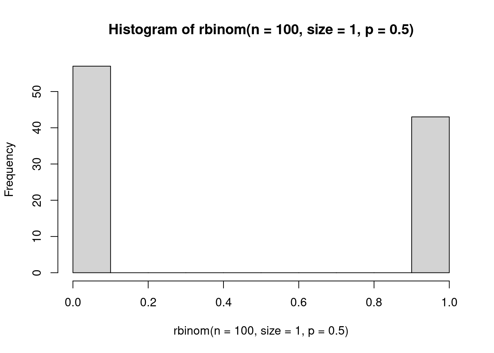
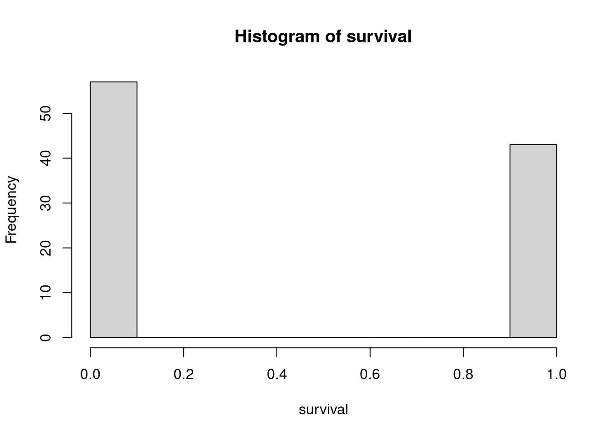
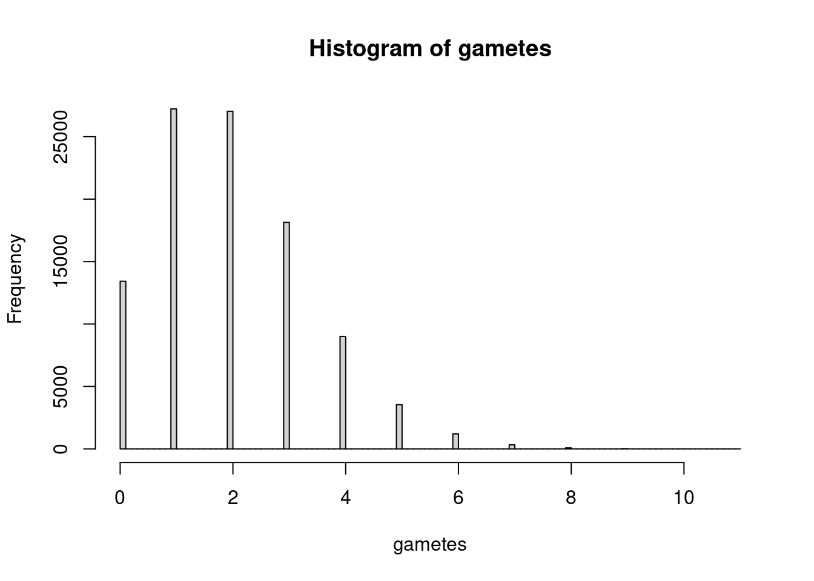
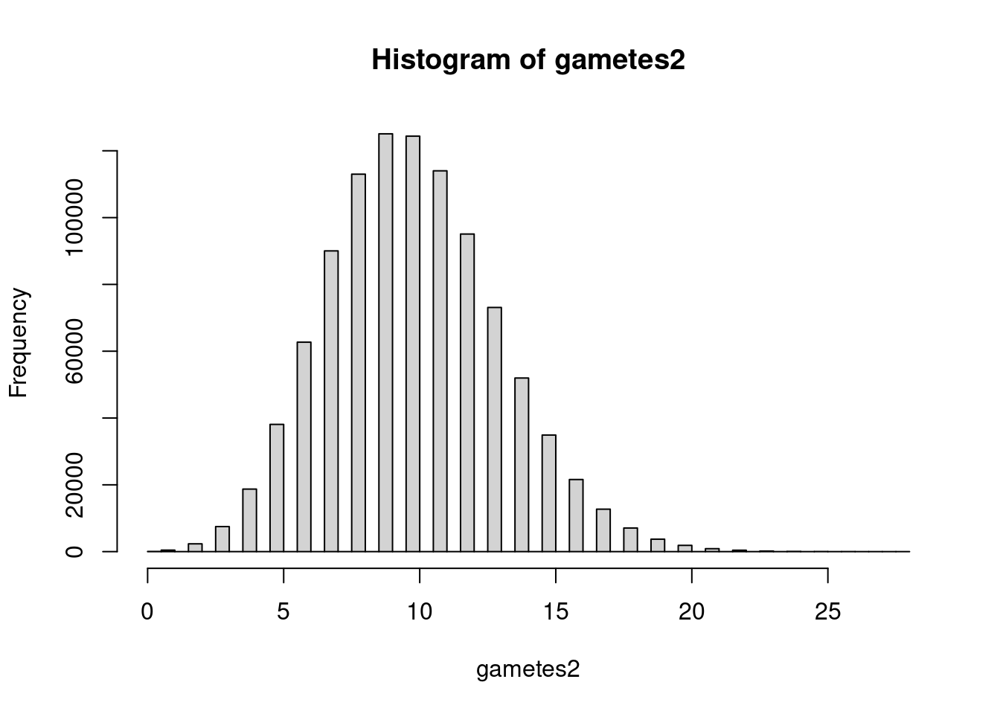
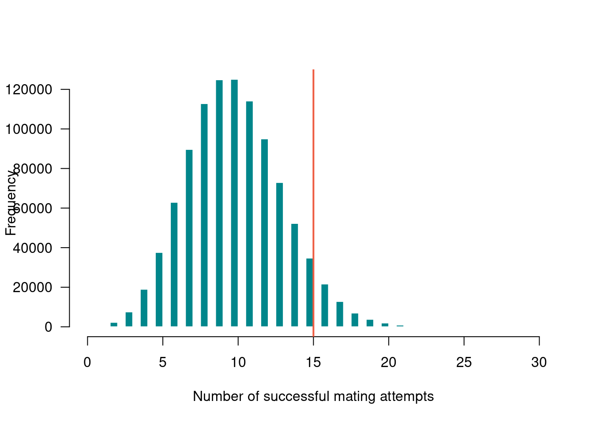
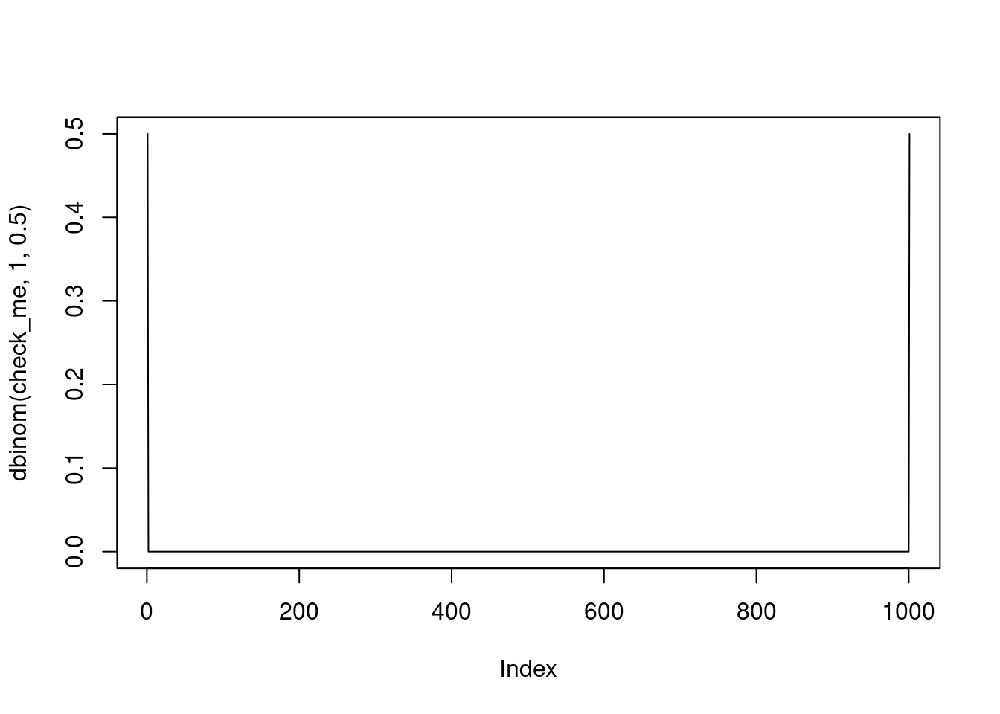

Today we are talking about random variables. There is a classic scene in the absurdist play Rosencrantz and Guildenstern are Dead by Tom Stoppard in which they improbably flip a coin and it turns up heads 92 times in a row. If you flip a coin, what is the probability that it lands up heads? There is a 0.50 probability, or 50% chance, of flipping heads. There is also a 0.5 probability that the outcome is tails. These two probabilities have to sum to 1 because there is no chance of any other outcome. Put another way, if \(p_h = 0.5\), then \(p_t = 1 - p_h = 0.5\), where \(p_h\) is probability of heads and \(p_t\) is probability of tails.
Now, instead of thinking about flipping a coin as a 50/50 shot at heads or tails, think about it only in terms of succeeding at flipping heads. Each successful attempt you get a ‘1’ for a success, and each time the coin is not heads, we call it a ‘0’ for failure. Put another way, we ask the question ‘Did we flip heads?’ and if the answer is TRUE, and we use a 1 to denote that. This is actually how R encodes TRUE (T = 1) and FALSE (F = 0).
# to leave notes to yourself in R scripts, start with a #?rbinom # look up the Help file to find out about the arguments to the function# rbinom wants:# n, the number of observations / replicates# size, the number of draws# p the probability of success# to simulate a single coin flip, we want to take one replicate (n=1) of # one draw (size=1) from a binomial distribution with a probability of # success (heads) of 0.5rbinom(n=1, size=1, prob=0.5)
[1] 1
# we could keep running this line over and over# or we could increase n, the number of replicates# this gives us a vector of 100 observations of a coin fliprbinom(n=100, size=1, p=c(0.5))
# to visualize the outcome, we can create a histogram plotting the results# using the function hist()hist(rbinom(n=100, size=1, p=0.5))

# because the function is drawing from a probability distribution, outcomes will# be a little different every single time. If you need them to be the same, you # can set the seed with set.seed(42), or any other number
The outcome we are observing, successfully flipping heads, is a random variable. A random variable is one that is drawn from a probability distribution (not in the colloquial sense of the word random). Our observed response (heads = TRUE) is drawn from a Bernoulli distribution with a probability of success of 0.5. We can write this mathematically as: \[heads \sim Bernoulli(p=0.5)\]
The Bernoulli distribution is a probability distribution that only yields success (1) or failure (0) based on the probability of success \(p\). The probability can vary depending on the process you are modeling, but the outcome will always be 0 or 1.
While we could be very high-brow in this course and simulate the probability of that series of events, instead we will consider the remarkable case of Jo Brand’s performance in a game of ‘Horse or Laminator’ on Taskmaster. In this task, five comedians have to guess correctly whether the taskmaster has selected a card with a horse on it, or a laminator on it. For the sake of this exercise, we will assume that the taskmaster is random in his selections, and that the only thing we need to be concerned with is the probability of a comedian correctly guessing if he has selected a horse or a laminator (i.e., he is not more or less likely to choose a horse or a laminator, and there is no higher chance of a comedian being correct in the case of him selecting one or the other).
Horse or Laminator
There are only two options, so we assume that comedians have a 50/50 shot at being correct, meaning they have a 0.5 probability of successfully guessing if the taskmaster has chosen a horse or a laminator. We can represent ‘success’ with a 1 and ‘failure’ with a 0. If the taskmaster chooses a horse and they select horse, that’s a 1; if he selects a horse and they select a laminator, that’s a 0; if he selects a laminator and they select a laminator, that’s a 1; and if he selects a laminator and they select a horse, that’s a 0. It does not matter what is selected, so long as their answers match.
In R, we can represent this scenario as arising from a binomial distribution. We’ve encountered the function rbinom before when playing around with code, and that is the way to randomly draw from a binomial distribution in R. For a single guess, we will make one draw from a binomial distribution of size 1, and a probability of 0.5.
rbinom(n =1, size =1, 0.5)
[1] 1
Note that the value we get from this can only ever be 0 or 1, but, the value returned is random. We don’t always get a 1, and we don’t always get a 0, but every single time we have a 0.5 probability of getting a 1 (i.e., a ‘success’).
Now let’s assume that each comedian has 10 guesses. That’s not actually what happens on the show, but let’s run with it for a minute. We can adjust our code so that instead of drawing one number from the distribution once, we draw one number ten times.
# take ten draws of size 1 from the distributionrbinom(n =10, size=1, prob=0.5)
[1] 1 0 1 1 1 0 1 0 0 0
# take 1 draw (for one comedian) who gets 10 guesses, and report the number of successes in those 10 attemptsrbinom(n =1, size=10, prob=0.5)
[1] 6
We could now tally up the number of times a comedian was successful based on this random draw. Over the long-run, this number should balance out to roughly 50/50, but on any given draw it is random. The reason it starts to balance out when we take enough draws is due to the law of large numbers. If we make enough draws from a probability distribution, eventually it will start to resemble the expected value. Let’s try still letting our comedian guess 10 times, but now we will iterate that for 1000 attempts. So in our simulated world, you could think of it like 1000 comedians all get a shot to guess horse or laminator 10 times each, and we want to know the average number of times they were correct. We would expect it to stabilize probably somewhere around five out of 10 times.
# this will give us 1000 simulations of 10 draws from binomialrbinom(n =1000, size=10, prob=0.5)
Now, what actually happens on Taskmaster is that the first comedian gets five correct in a row (horse, horse, horse, horse, laminator). The second gets one correct. The third gets zero correct, the fourth gets one, and the final comedian, Jo Brand, guesses horse or laminator correct 13 times in a row. Using the rbinom function, work out what the probability of each of these events is. Keep in mind that now instead of getting a certain number of guesses and tallying success across all those, as soon as a comedian guesses incorrectly, they are out. So we are looking only for that number of successful events in a row to calculate the probability.
# recode david's as 1, because otherwise length doesn't work correctly; you can't guess 0 times# there are many other solutions possible# you could subset stuff, for example# or use logical vectors to find true and false, etc.scores <-c(5, 1, 1, 1, 13)for(i in scores){print(prop.table(table(rbinom(n =1000000, size = i, prob=0.5)==i)))}
To move on to a slightly more ecological example than coin flips or horses and laminators, let’s think about guillemots. Guillemots are seabirds that nest on steep cliffsides to escape predators. They spend most of their life on the ocean, however, and as such are very awkward on land and also not great at flying. To get from the cliffside nest to the ocean for the first time, guillemot chicks have to jump and then glide/fly. If they do not make it all the way, they can attempt to run, but are vulnerable to predation. The only option for chicks is to survive or fail - making it 70% of the way to the ocean will result in failure (and, in this case, death). Thus the probability of success does not equate to the actual rate of success - it is the probability per trial (i.e., each attempt).
# let's assume chicks have a 40% chance of making it to the ocean, and there are# 100 chicks jumping from the cliff hoping to make it to the ocean so we have # 100 observations, each with one draw from the Bernoulli distributionrbinom(n =100, size=1, p=0.4)
# so far, we have just been running functions and the output is shown in the console# but we don't have anything in our environment# can save to an object with the <- assignment operatorsurvival <-rbinom(n=100, size=1, p=0.4)# we can then do things with that saved object, like plot ithist(survival)

3.2 Binomial distribution
3.2.1 Guillemot example
Guillemots typically only lay 1-2 eggs, but for the sake of our example code, let’s pretend that each pair has 3 chicks that are attempting to make it to the ocean. Each individual chick’s attempt could be modeled with a Bernoulli distribution, but if we consider it from the perspective of the breeding pair, the total number of surviving offspring is what matters. We can think of the number of chicks from each nest that make it to the ocean as the sum of their individual attempts for a single nest. This is the Binomial distribution, which is a more generalized version of the Bernoulli distribution (more accurately, the Bernoulli distribution is a special case of the Binomial distribution with one draw) in which each observation has multiple draws.
# for one nest with 3 chicks and a probability of success of 0.4rbinom(n=1, size=3, p=0.4)
[1] 1
# we could also think about a colony with let's say 100 nests# how many chicks from each nest will make it?nest_offspring <-rbinom(n=100, size=3, p=0.4)hist(nest_offspring)
# what is the probability that all three chicks from a nest make it?# because we know what we fixed p to, we could multiply the probabilities0.4^3
[1] 0.064
# what is the probability that none make it?(1-0.4)^3
[1] 0.216
We are able to calculate what the probability of these outcomes are because we fixed the probability of success at 0.4 and then simulated outcomes. In the real world, we rarely know what the probability of success truly is, and instead we are working backwards from our observed outcomes (i.e. our data) to estimate the probability of survival. One of the beautiful things about working with simulated data is that we know the input value, so we can test assumptions, see if we recapture our input, and play around with different model structures and know that anything that is unexpected is most likely a problem with our code or model, not the data.
With discrete distributions like the Binomial, we can convert the frequency of outcomes to a proportion of the total as an estimate of probability. Dividing the frequencies by the total sample size makes it so that the total probability sums to 1.
# table is a function that tallies up all the items in a vector# a vector is a type of object that is one dimension, i.e. nest_offspring is a # vector with length = 100table(nest_offspring)
nest_offspring
0 1 2 3
21 42 31 6
# proportions will convert the table into proportions instead of counts# so will prop.table and I often use that function because I learned it first# there are many different ways to accomplish the same goal in Rsurvival_prob <-proportions(table(nest_offspring))# How do these values compare to the calculated probability of all three chicks# surviving? What about of none surviving?# With the values calculated from the simulated data (i.e. not the parameter# value that we fixed), what is the probability that *at least* one chick # from a nest survives?0.47+0.27+0.06# note: numbers might be different because we didn't set.seed()
[1] 0.8
In general with coding, you want to avoid hard coding like this where you put in fixed values. It is much better to use code that is flexible if the input data changes (e.g. we are using a randomly generated dataset, so it will change every time), or if you want to change some parameter across a lot of different parts of the code. For example, instead of repeatedly typing p=0.4, we could have created an object in our environment with the probability of success such as p.surv <- 0.4 and then specifying p=p.surv throughout the script, which would make it really easy to change the simulations for a new scenario (e.g. if the guillemot chicks were given little hang-gliders, we might increase p.surv and would only have to type it out once as p.surv <- 0.8.
Subsetting vectors in R is a really useful tool when you want to apply a function to only part of a vector, inspect part of an object, etc. We use the square brackets [] for subsetting, and within them specify which elements to return. The elements to return can be a numeric vector (e.g. c(1,2,4)) to return the first, second, and fourth elements, or a logical vector indicating if an element should or should not be returned (e.g. c(TRUE TRUE FALSE TRUE)). If subsetting a range of consecutive elements, the : operator can also be used (e.g. 1:4 is the same as c(1,2,3,4)).
# To avoid hard coding our estimated percent, we can use sum() on a subset of# the table of proportions to estimate the probability at least one survives?sum(survival_prob[2:4])
[1] 0.79
# what is the probability at least two survive?sum(survival_prob[3:4])
[1] 0.37
# side note: if you're not sure which indices to subset, it can help to look at# your object; you can easily do this in RStudio by highlighting just the bit of# code with your object name and using Ctrl + Enter (or Cmd + Enter) to print# just that object to the console, i.e. if you highlight part of a line, you will# only run the highlighted bit, not the entire line
3.2.2 Coral example
With the guillemots, we were assuming that each pair had three potential offspring surviving. What happens if we vastly increase the number of draws from the binomial distribution? Take corals as an example. Some broadcast spawning corals have mass synchronized spawning events where individual corals on a reef all release bundles of sperm and eggs at the same time. The reproductive success of each individual coral can still be modeled as a binomial distribution, i.e. how many of those released sperm and eggs will actually encounter a bundle of the same species and be a successful mating attempt is a random variable drawn from a Binomial distribution with a number of draws \(N\) equal to the number of released sperm and eggs and a probability of success \(p\) for each of those. \[ offspring \sim Binomial(N, p)\].
Note: the \(N\) for denoting the number of draws from the Binomial is distinct from the n = argument in the rbinom() function. Don’t let this confuse you! \(N\) equates to the size = argument, while n = is the number of observations of the random variable, i.e. the total number of individual corals on the reef.
# let's assume now the coral reef has 100,00 individual corals (I have no # clue if this is an accurate number, but let's roll with it)# let's also assume each individual coral releases 10,000 sperm and eggs# and the probability for each of those resulting in a successful mating event # 0.0002 (i.e. 0.002%)gametes <-rbinom(n=100000, size=10000, p=0.0002)hist(gametes, breaks =100)

# what is the probability of reproductive failure?prop.table(table(gametes))
# what's the probability of more than 5 offspring?prop.table(table(gametes>5))
FALSE TRUE
0.98336 0.01664
# now let's increase the number of individual corals to 1 million, and also increase# the probability of success to 0.001 gametes2 <-rbinom(n=1000000, size=10000, p=0.001)hist(gametes2, breaks=100)

# now what is the probability of reproductive failure?prop.table(table(gametes2==0))
FALSE TRUE
0.999955 0.000045
# and what is the probability of more than 15 offspring?prop.table(table(gametes2>15))
FALSE TRUE
0.951396 0.048604
# let's visualize the data as a histogram again, but add a vertical bar using # the abline() function at 15; note there are other plotting options to make # your plots slightly more aesthetichist(gametes2, breaks=100,border=F, # i just don't like borders on barscol="turquoise4", main="", # removes the 'title'xlab="Number of successful mating attempts", # changes x axis labellas=1# rotates the axis labels the right way )abline(v=15, lwd=2, # width of linecol="tomato2")

3.3 Probability mass
In the example above, you can see that there is very low probability of being in the tails of the distribution. So far, we have only been thinking about discrete distributions where the outcome will fall into a ‘bin’ of some kind. With the Bernoulli distribution, the outcome could only be 0 or 1. With the Binomial distribution, the outcome could only be an integer, including zero, and can only be positive. There are no numbers in between; you either make it to the ocean, or you don’t, and you never end up with 1.5 surviving offspring.
Discrete distributions have a probability mass function, which you can think of as the amount of probability associated with each bar in the histogram (including potential ‘bars’ that are never observed and their probability mass is 0).
We can visualize the probability mass associated with different outcomes using the dbinom function.
dbinom(c(0, 1), 1, 0.5)
[1] 0.5 0.5
# what if we tried for a non-possible outcome?check_me <-seq(0, 1, by=0.001)plot(dbinom(check_me, 1, 0.5), type="l")
Warning in dbinom(check_me, 1, 0.5): non-integer x = 0.001000
Warning in dbinom(check_me, 1, 0.5): non-integer x = 0.002000
Warning in dbinom(check_me, 1, 0.5): non-integer x = 0.003000
Warning in dbinom(check_me, 1, 0.5): non-integer x = 0.004000
Warning in dbinom(check_me, 1, 0.5): non-integer x = 0.005000
Warning in dbinom(check_me, 1, 0.5): non-integer x = 0.006000
Warning in dbinom(check_me, 1, 0.5): non-integer x = 0.007000
Warning in dbinom(check_me, 1, 0.5): non-integer x = 0.008000
Warning in dbinom(check_me, 1, 0.5): non-integer x = 0.009000
Warning in dbinom(check_me, 1, 0.5): non-integer x = 0.010000
Warning in dbinom(check_me, 1, 0.5): non-integer x = 0.011000
Warning in dbinom(check_me, 1, 0.5): non-integer x = 0.012000
Warning in dbinom(check_me, 1, 0.5): non-integer x = 0.013000
Warning in dbinom(check_me, 1, 0.5): non-integer x = 0.014000
Warning in dbinom(check_me, 1, 0.5): non-integer x = 0.015000
Warning in dbinom(check_me, 1, 0.5): non-integer x = 0.016000
Warning in dbinom(check_me, 1, 0.5): non-integer x = 0.017000
Warning in dbinom(check_me, 1, 0.5): non-integer x = 0.018000
Warning in dbinom(check_me, 1, 0.5): non-integer x = 0.019000
Warning in dbinom(check_me, 1, 0.5): non-integer x = 0.020000
Warning in dbinom(check_me, 1, 0.5): non-integer x = 0.021000
Warning in dbinom(check_me, 1, 0.5): non-integer x = 0.022000
Warning in dbinom(check_me, 1, 0.5): non-integer x = 0.023000
Warning in dbinom(check_me, 1, 0.5): non-integer x = 0.024000
Warning in dbinom(check_me, 1, 0.5): non-integer x = 0.025000
Warning in dbinom(check_me, 1, 0.5): non-integer x = 0.026000
Warning in dbinom(check_me, 1, 0.5): non-integer x = 0.027000
Warning in dbinom(check_me, 1, 0.5): non-integer x = 0.028000
Warning in dbinom(check_me, 1, 0.5): non-integer x = 0.029000
Warning in dbinom(check_me, 1, 0.5): non-integer x = 0.030000
Warning in dbinom(check_me, 1, 0.5): non-integer x = 0.031000
Warning in dbinom(check_me, 1, 0.5): non-integer x = 0.032000
Warning in dbinom(check_me, 1, 0.5): non-integer x = 0.033000
Warning in dbinom(check_me, 1, 0.5): non-integer x = 0.034000
Warning in dbinom(check_me, 1, 0.5): non-integer x = 0.035000
Warning in dbinom(check_me, 1, 0.5): non-integer x = 0.036000
Warning in dbinom(check_me, 1, 0.5): non-integer x = 0.037000
Warning in dbinom(check_me, 1, 0.5): non-integer x = 0.038000
Warning in dbinom(check_me, 1, 0.5): non-integer x = 0.039000
Warning in dbinom(check_me, 1, 0.5): non-integer x = 0.040000
Warning in dbinom(check_me, 1, 0.5): non-integer x = 0.041000
Warning in dbinom(check_me, 1, 0.5): non-integer x = 0.042000
Warning in dbinom(check_me, 1, 0.5): non-integer x = 0.043000
Warning in dbinom(check_me, 1, 0.5): non-integer x = 0.044000
Warning in dbinom(check_me, 1, 0.5): non-integer x = 0.045000
Warning in dbinom(check_me, 1, 0.5): non-integer x = 0.046000
Warning in dbinom(check_me, 1, 0.5): non-integer x = 0.047000
Warning in dbinom(check_me, 1, 0.5): non-integer x = 0.048000
Warning in dbinom(check_me, 1, 0.5): non-integer x = 0.049000
Warning in dbinom(check_me, 1, 0.5): non-integer x = 0.050000
Warning in dbinom(check_me, 1, 0.5): non-integer x = 0.051000
Warning in dbinom(check_me, 1, 0.5): non-integer x = 0.052000
Warning in dbinom(check_me, 1, 0.5): non-integer x = 0.053000
Warning in dbinom(check_me, 1, 0.5): non-integer x = 0.054000
Warning in dbinom(check_me, 1, 0.5): non-integer x = 0.055000
Warning in dbinom(check_me, 1, 0.5): non-integer x = 0.056000
Warning in dbinom(check_me, 1, 0.5): non-integer x = 0.057000
Warning in dbinom(check_me, 1, 0.5): non-integer x = 0.058000
Warning in dbinom(check_me, 1, 0.5): non-integer x = 0.059000
Warning in dbinom(check_me, 1, 0.5): non-integer x = 0.060000
Warning in dbinom(check_me, 1, 0.5): non-integer x = 0.061000
Warning in dbinom(check_me, 1, 0.5): non-integer x = 0.062000
Warning in dbinom(check_me, 1, 0.5): non-integer x = 0.063000
Warning in dbinom(check_me, 1, 0.5): non-integer x = 0.064000
Warning in dbinom(check_me, 1, 0.5): non-integer x = 0.065000
Warning in dbinom(check_me, 1, 0.5): non-integer x = 0.066000
Warning in dbinom(check_me, 1, 0.5): non-integer x = 0.067000
Warning in dbinom(check_me, 1, 0.5): non-integer x = 0.068000
Warning in dbinom(check_me, 1, 0.5): non-integer x = 0.069000
Warning in dbinom(check_me, 1, 0.5): non-integer x = 0.070000
Warning in dbinom(check_me, 1, 0.5): non-integer x = 0.071000
Warning in dbinom(check_me, 1, 0.5): non-integer x = 0.072000
Warning in dbinom(check_me, 1, 0.5): non-integer x = 0.073000
Warning in dbinom(check_me, 1, 0.5): non-integer x = 0.074000
Warning in dbinom(check_me, 1, 0.5): non-integer x = 0.075000
Warning in dbinom(check_me, 1, 0.5): non-integer x = 0.076000
Warning in dbinom(check_me, 1, 0.5): non-integer x = 0.077000
Warning in dbinom(check_me, 1, 0.5): non-integer x = 0.078000
Warning in dbinom(check_me, 1, 0.5): non-integer x = 0.079000
Warning in dbinom(check_me, 1, 0.5): non-integer x = 0.080000
Warning in dbinom(check_me, 1, 0.5): non-integer x = 0.081000
Warning in dbinom(check_me, 1, 0.5): non-integer x = 0.082000
Warning in dbinom(check_me, 1, 0.5): non-integer x = 0.083000
Warning in dbinom(check_me, 1, 0.5): non-integer x = 0.084000
Warning in dbinom(check_me, 1, 0.5): non-integer x = 0.085000
Warning in dbinom(check_me, 1, 0.5): non-integer x = 0.086000
Warning in dbinom(check_me, 1, 0.5): non-integer x = 0.087000
Warning in dbinom(check_me, 1, 0.5): non-integer x = 0.088000
Warning in dbinom(check_me, 1, 0.5): non-integer x = 0.089000
Warning in dbinom(check_me, 1, 0.5): non-integer x = 0.090000
Warning in dbinom(check_me, 1, 0.5): non-integer x = 0.091000
Warning in dbinom(check_me, 1, 0.5): non-integer x = 0.092000
Warning in dbinom(check_me, 1, 0.5): non-integer x = 0.093000
Warning in dbinom(check_me, 1, 0.5): non-integer x = 0.094000
Warning in dbinom(check_me, 1, 0.5): non-integer x = 0.095000
Warning in dbinom(check_me, 1, 0.5): non-integer x = 0.096000
Warning in dbinom(check_me, 1, 0.5): non-integer x = 0.097000
Warning in dbinom(check_me, 1, 0.5): non-integer x = 0.098000
Warning in dbinom(check_me, 1, 0.5): non-integer x = 0.099000
Warning in dbinom(check_me, 1, 0.5): non-integer x = 0.100000
Warning in dbinom(check_me, 1, 0.5): non-integer x = 0.101000
Warning in dbinom(check_me, 1, 0.5): non-integer x = 0.102000
Warning in dbinom(check_me, 1, 0.5): non-integer x = 0.103000
Warning in dbinom(check_me, 1, 0.5): non-integer x = 0.104000
Warning in dbinom(check_me, 1, 0.5): non-integer x = 0.105000
Warning in dbinom(check_me, 1, 0.5): non-integer x = 0.106000
Warning in dbinom(check_me, 1, 0.5): non-integer x = 0.107000
Warning in dbinom(check_me, 1, 0.5): non-integer x = 0.108000
Warning in dbinom(check_me, 1, 0.5): non-integer x = 0.109000
Warning in dbinom(check_me, 1, 0.5): non-integer x = 0.110000
Warning in dbinom(check_me, 1, 0.5): non-integer x = 0.111000
Warning in dbinom(check_me, 1, 0.5): non-integer x = 0.112000
Warning in dbinom(check_me, 1, 0.5): non-integer x = 0.113000
Warning in dbinom(check_me, 1, 0.5): non-integer x = 0.114000
Warning in dbinom(check_me, 1, 0.5): non-integer x = 0.115000
Warning in dbinom(check_me, 1, 0.5): non-integer x = 0.116000
Warning in dbinom(check_me, 1, 0.5): non-integer x = 0.117000
Warning in dbinom(check_me, 1, 0.5): non-integer x = 0.118000
Warning in dbinom(check_me, 1, 0.5): non-integer x = 0.119000
Warning in dbinom(check_me, 1, 0.5): non-integer x = 0.120000
Warning in dbinom(check_me, 1, 0.5): non-integer x = 0.121000
Warning in dbinom(check_me, 1, 0.5): non-integer x = 0.122000
Warning in dbinom(check_me, 1, 0.5): non-integer x = 0.123000
Warning in dbinom(check_me, 1, 0.5): non-integer x = 0.124000
Warning in dbinom(check_me, 1, 0.5): non-integer x = 0.125000
Warning in dbinom(check_me, 1, 0.5): non-integer x = 0.126000
Warning in dbinom(check_me, 1, 0.5): non-integer x = 0.127000
Warning in dbinom(check_me, 1, 0.5): non-integer x = 0.128000
Warning in dbinom(check_me, 1, 0.5): non-integer x = 0.129000
Warning in dbinom(check_me, 1, 0.5): non-integer x = 0.130000
Warning in dbinom(check_me, 1, 0.5): non-integer x = 0.131000
Warning in dbinom(check_me, 1, 0.5): non-integer x = 0.132000
Warning in dbinom(check_me, 1, 0.5): non-integer x = 0.133000
Warning in dbinom(check_me, 1, 0.5): non-integer x = 0.134000
Warning in dbinom(check_me, 1, 0.5): non-integer x = 0.135000
Warning in dbinom(check_me, 1, 0.5): non-integer x = 0.136000
Warning in dbinom(check_me, 1, 0.5): non-integer x = 0.137000
Warning in dbinom(check_me, 1, 0.5): non-integer x = 0.138000
Warning in dbinom(check_me, 1, 0.5): non-integer x = 0.139000
Warning in dbinom(check_me, 1, 0.5): non-integer x = 0.140000
Warning in dbinom(check_me, 1, 0.5): non-integer x = 0.141000
Warning in dbinom(check_me, 1, 0.5): non-integer x = 0.142000
Warning in dbinom(check_me, 1, 0.5): non-integer x = 0.143000
Warning in dbinom(check_me, 1, 0.5): non-integer x = 0.144000
Warning in dbinom(check_me, 1, 0.5): non-integer x = 0.145000
Warning in dbinom(check_me, 1, 0.5): non-integer x = 0.146000
Warning in dbinom(check_me, 1, 0.5): non-integer x = 0.147000
Warning in dbinom(check_me, 1, 0.5): non-integer x = 0.148000
Warning in dbinom(check_me, 1, 0.5): non-integer x = 0.149000
Warning in dbinom(check_me, 1, 0.5): non-integer x = 0.150000
Warning in dbinom(check_me, 1, 0.5): non-integer x = 0.151000
Warning in dbinom(check_me, 1, 0.5): non-integer x = 0.152000
Warning in dbinom(check_me, 1, 0.5): non-integer x = 0.153000
Warning in dbinom(check_me, 1, 0.5): non-integer x = 0.154000
Warning in dbinom(check_me, 1, 0.5): non-integer x = 0.155000
Warning in dbinom(check_me, 1, 0.5): non-integer x = 0.156000
Warning in dbinom(check_me, 1, 0.5): non-integer x = 0.157000
Warning in dbinom(check_me, 1, 0.5): non-integer x = 0.158000
Warning in dbinom(check_me, 1, 0.5): non-integer x = 0.159000
Warning in dbinom(check_me, 1, 0.5): non-integer x = 0.160000
Warning in dbinom(check_me, 1, 0.5): non-integer x = 0.161000
Warning in dbinom(check_me, 1, 0.5): non-integer x = 0.162000
Warning in dbinom(check_me, 1, 0.5): non-integer x = 0.163000
Warning in dbinom(check_me, 1, 0.5): non-integer x = 0.164000
Warning in dbinom(check_me, 1, 0.5): non-integer x = 0.165000
Warning in dbinom(check_me, 1, 0.5): non-integer x = 0.166000
Warning in dbinom(check_me, 1, 0.5): non-integer x = 0.167000
Warning in dbinom(check_me, 1, 0.5): non-integer x = 0.168000
Warning in dbinom(check_me, 1, 0.5): non-integer x = 0.169000
Warning in dbinom(check_me, 1, 0.5): non-integer x = 0.170000
Warning in dbinom(check_me, 1, 0.5): non-integer x = 0.171000
Warning in dbinom(check_me, 1, 0.5): non-integer x = 0.172000
Warning in dbinom(check_me, 1, 0.5): non-integer x = 0.173000
Warning in dbinom(check_me, 1, 0.5): non-integer x = 0.174000
Warning in dbinom(check_me, 1, 0.5): non-integer x = 0.175000
Warning in dbinom(check_me, 1, 0.5): non-integer x = 0.176000
Warning in dbinom(check_me, 1, 0.5): non-integer x = 0.177000
Warning in dbinom(check_me, 1, 0.5): non-integer x = 0.178000
Warning in dbinom(check_me, 1, 0.5): non-integer x = 0.179000
Warning in dbinom(check_me, 1, 0.5): non-integer x = 0.180000
Warning in dbinom(check_me, 1, 0.5): non-integer x = 0.181000
Warning in dbinom(check_me, 1, 0.5): non-integer x = 0.182000
Warning in dbinom(check_me, 1, 0.5): non-integer x = 0.183000
Warning in dbinom(check_me, 1, 0.5): non-integer x = 0.184000
Warning in dbinom(check_me, 1, 0.5): non-integer x = 0.185000
Warning in dbinom(check_me, 1, 0.5): non-integer x = 0.186000
Warning in dbinom(check_me, 1, 0.5): non-integer x = 0.187000
Warning in dbinom(check_me, 1, 0.5): non-integer x = 0.188000
Warning in dbinom(check_me, 1, 0.5): non-integer x = 0.189000
Warning in dbinom(check_me, 1, 0.5): non-integer x = 0.190000
Warning in dbinom(check_me, 1, 0.5): non-integer x = 0.191000
Warning in dbinom(check_me, 1, 0.5): non-integer x = 0.192000
Warning in dbinom(check_me, 1, 0.5): non-integer x = 0.193000
Warning in dbinom(check_me, 1, 0.5): non-integer x = 0.194000
Warning in dbinom(check_me, 1, 0.5): non-integer x = 0.195000
Warning in dbinom(check_me, 1, 0.5): non-integer x = 0.196000
Warning in dbinom(check_me, 1, 0.5): non-integer x = 0.197000
Warning in dbinom(check_me, 1, 0.5): non-integer x = 0.198000
Warning in dbinom(check_me, 1, 0.5): non-integer x = 0.199000
Warning in dbinom(check_me, 1, 0.5): non-integer x = 0.200000
Warning in dbinom(check_me, 1, 0.5): non-integer x = 0.201000
Warning in dbinom(check_me, 1, 0.5): non-integer x = 0.202000
Warning in dbinom(check_me, 1, 0.5): non-integer x = 0.203000
Warning in dbinom(check_me, 1, 0.5): non-integer x = 0.204000
Warning in dbinom(check_me, 1, 0.5): non-integer x = 0.205000
Warning in dbinom(check_me, 1, 0.5): non-integer x = 0.206000
Warning in dbinom(check_me, 1, 0.5): non-integer x = 0.207000
Warning in dbinom(check_me, 1, 0.5): non-integer x = 0.208000
Warning in dbinom(check_me, 1, 0.5): non-integer x = 0.209000
Warning in dbinom(check_me, 1, 0.5): non-integer x = 0.210000
Warning in dbinom(check_me, 1, 0.5): non-integer x = 0.211000
Warning in dbinom(check_me, 1, 0.5): non-integer x = 0.212000
Warning in dbinom(check_me, 1, 0.5): non-integer x = 0.213000
Warning in dbinom(check_me, 1, 0.5): non-integer x = 0.214000
Warning in dbinom(check_me, 1, 0.5): non-integer x = 0.215000
Warning in dbinom(check_me, 1, 0.5): non-integer x = 0.216000
Warning in dbinom(check_me, 1, 0.5): non-integer x = 0.217000
Warning in dbinom(check_me, 1, 0.5): non-integer x = 0.218000
Warning in dbinom(check_me, 1, 0.5): non-integer x = 0.219000
Warning in dbinom(check_me, 1, 0.5): non-integer x = 0.220000
Warning in dbinom(check_me, 1, 0.5): non-integer x = 0.221000
Warning in dbinom(check_me, 1, 0.5): non-integer x = 0.222000
Warning in dbinom(check_me, 1, 0.5): non-integer x = 0.223000
Warning in dbinom(check_me, 1, 0.5): non-integer x = 0.224000
Warning in dbinom(check_me, 1, 0.5): non-integer x = 0.225000
Warning in dbinom(check_me, 1, 0.5): non-integer x = 0.226000
Warning in dbinom(check_me, 1, 0.5): non-integer x = 0.227000
Warning in dbinom(check_me, 1, 0.5): non-integer x = 0.228000
Warning in dbinom(check_me, 1, 0.5): non-integer x = 0.229000
Warning in dbinom(check_me, 1, 0.5): non-integer x = 0.230000
Warning in dbinom(check_me, 1, 0.5): non-integer x = 0.231000
Warning in dbinom(check_me, 1, 0.5): non-integer x = 0.232000
Warning in dbinom(check_me, 1, 0.5): non-integer x = 0.233000
Warning in dbinom(check_me, 1, 0.5): non-integer x = 0.234000
Warning in dbinom(check_me, 1, 0.5): non-integer x = 0.235000
Warning in dbinom(check_me, 1, 0.5): non-integer x = 0.236000
Warning in dbinom(check_me, 1, 0.5): non-integer x = 0.237000
Warning in dbinom(check_me, 1, 0.5): non-integer x = 0.238000
Warning in dbinom(check_me, 1, 0.5): non-integer x = 0.239000
Warning in dbinom(check_me, 1, 0.5): non-integer x = 0.240000
Warning in dbinom(check_me, 1, 0.5): non-integer x = 0.241000
Warning in dbinom(check_me, 1, 0.5): non-integer x = 0.242000
Warning in dbinom(check_me, 1, 0.5): non-integer x = 0.243000
Warning in dbinom(check_me, 1, 0.5): non-integer x = 0.244000
Warning in dbinom(check_me, 1, 0.5): non-integer x = 0.245000
Warning in dbinom(check_me, 1, 0.5): non-integer x = 0.246000
Warning in dbinom(check_me, 1, 0.5): non-integer x = 0.247000
Warning in dbinom(check_me, 1, 0.5): non-integer x = 0.248000
Warning in dbinom(check_me, 1, 0.5): non-integer x = 0.249000
Warning in dbinom(check_me, 1, 0.5): non-integer x = 0.250000
Warning in dbinom(check_me, 1, 0.5): non-integer x = 0.251000
Warning in dbinom(check_me, 1, 0.5): non-integer x = 0.252000
Warning in dbinom(check_me, 1, 0.5): non-integer x = 0.253000
Warning in dbinom(check_me, 1, 0.5): non-integer x = 0.254000
Warning in dbinom(check_me, 1, 0.5): non-integer x = 0.255000
Warning in dbinom(check_me, 1, 0.5): non-integer x = 0.256000
Warning in dbinom(check_me, 1, 0.5): non-integer x = 0.257000
Warning in dbinom(check_me, 1, 0.5): non-integer x = 0.258000
Warning in dbinom(check_me, 1, 0.5): non-integer x = 0.259000
Warning in dbinom(check_me, 1, 0.5): non-integer x = 0.260000
Warning in dbinom(check_me, 1, 0.5): non-integer x = 0.261000
Warning in dbinom(check_me, 1, 0.5): non-integer x = 0.262000
Warning in dbinom(check_me, 1, 0.5): non-integer x = 0.263000
Warning in dbinom(check_me, 1, 0.5): non-integer x = 0.264000
Warning in dbinom(check_me, 1, 0.5): non-integer x = 0.265000
Warning in dbinom(check_me, 1, 0.5): non-integer x = 0.266000
Warning in dbinom(check_me, 1, 0.5): non-integer x = 0.267000
Warning in dbinom(check_me, 1, 0.5): non-integer x = 0.268000
Warning in dbinom(check_me, 1, 0.5): non-integer x = 0.269000
Warning in dbinom(check_me, 1, 0.5): non-integer x = 0.270000
Warning in dbinom(check_me, 1, 0.5): non-integer x = 0.271000
Warning in dbinom(check_me, 1, 0.5): non-integer x = 0.272000
Warning in dbinom(check_me, 1, 0.5): non-integer x = 0.273000
Warning in dbinom(check_me, 1, 0.5): non-integer x = 0.274000
Warning in dbinom(check_me, 1, 0.5): non-integer x = 0.275000
Warning in dbinom(check_me, 1, 0.5): non-integer x = 0.276000
Warning in dbinom(check_me, 1, 0.5): non-integer x = 0.277000
Warning in dbinom(check_me, 1, 0.5): non-integer x = 0.278000
Warning in dbinom(check_me, 1, 0.5): non-integer x = 0.279000
Warning in dbinom(check_me, 1, 0.5): non-integer x = 0.280000
Warning in dbinom(check_me, 1, 0.5): non-integer x = 0.281000
Warning in dbinom(check_me, 1, 0.5): non-integer x = 0.282000
Warning in dbinom(check_me, 1, 0.5): non-integer x = 0.283000
Warning in dbinom(check_me, 1, 0.5): non-integer x = 0.284000
Warning in dbinom(check_me, 1, 0.5): non-integer x = 0.285000
Warning in dbinom(check_me, 1, 0.5): non-integer x = 0.286000
Warning in dbinom(check_me, 1, 0.5): non-integer x = 0.287000
Warning in dbinom(check_me, 1, 0.5): non-integer x = 0.288000
Warning in dbinom(check_me, 1, 0.5): non-integer x = 0.289000
Warning in dbinom(check_me, 1, 0.5): non-integer x = 0.290000
Warning in dbinom(check_me, 1, 0.5): non-integer x = 0.291000
Warning in dbinom(check_me, 1, 0.5): non-integer x = 0.292000
Warning in dbinom(check_me, 1, 0.5): non-integer x = 0.293000
Warning in dbinom(check_me, 1, 0.5): non-integer x = 0.294000
Warning in dbinom(check_me, 1, 0.5): non-integer x = 0.295000
Warning in dbinom(check_me, 1, 0.5): non-integer x = 0.296000
Warning in dbinom(check_me, 1, 0.5): non-integer x = 0.297000
Warning in dbinom(check_me, 1, 0.5): non-integer x = 0.298000
Warning in dbinom(check_me, 1, 0.5): non-integer x = 0.299000
Warning in dbinom(check_me, 1, 0.5): non-integer x = 0.300000
Warning in dbinom(check_me, 1, 0.5): non-integer x = 0.301000
Warning in dbinom(check_me, 1, 0.5): non-integer x = 0.302000
Warning in dbinom(check_me, 1, 0.5): non-integer x = 0.303000
Warning in dbinom(check_me, 1, 0.5): non-integer x = 0.304000
Warning in dbinom(check_me, 1, 0.5): non-integer x = 0.305000
Warning in dbinom(check_me, 1, 0.5): non-integer x = 0.306000
Warning in dbinom(check_me, 1, 0.5): non-integer x = 0.307000
Warning in dbinom(check_me, 1, 0.5): non-integer x = 0.308000
Warning in dbinom(check_me, 1, 0.5): non-integer x = 0.309000
Warning in dbinom(check_me, 1, 0.5): non-integer x = 0.310000
Warning in dbinom(check_me, 1, 0.5): non-integer x = 0.311000
Warning in dbinom(check_me, 1, 0.5): non-integer x = 0.312000
Warning in dbinom(check_me, 1, 0.5): non-integer x = 0.313000
Warning in dbinom(check_me, 1, 0.5): non-integer x = 0.314000
Warning in dbinom(check_me, 1, 0.5): non-integer x = 0.315000
Warning in dbinom(check_me, 1, 0.5): non-integer x = 0.316000
Warning in dbinom(check_me, 1, 0.5): non-integer x = 0.317000
Warning in dbinom(check_me, 1, 0.5): non-integer x = 0.318000
Warning in dbinom(check_me, 1, 0.5): non-integer x = 0.319000
Warning in dbinom(check_me, 1, 0.5): non-integer x = 0.320000
Warning in dbinom(check_me, 1, 0.5): non-integer x = 0.321000
Warning in dbinom(check_me, 1, 0.5): non-integer x = 0.322000
Warning in dbinom(check_me, 1, 0.5): non-integer x = 0.323000
Warning in dbinom(check_me, 1, 0.5): non-integer x = 0.324000
Warning in dbinom(check_me, 1, 0.5): non-integer x = 0.325000
Warning in dbinom(check_me, 1, 0.5): non-integer x = 0.326000
Warning in dbinom(check_me, 1, 0.5): non-integer x = 0.327000
Warning in dbinom(check_me, 1, 0.5): non-integer x = 0.328000
Warning in dbinom(check_me, 1, 0.5): non-integer x = 0.329000
Warning in dbinom(check_me, 1, 0.5): non-integer x = 0.330000
Warning in dbinom(check_me, 1, 0.5): non-integer x = 0.331000
Warning in dbinom(check_me, 1, 0.5): non-integer x = 0.332000
Warning in dbinom(check_me, 1, 0.5): non-integer x = 0.333000
Warning in dbinom(check_me, 1, 0.5): non-integer x = 0.334000
Warning in dbinom(check_me, 1, 0.5): non-integer x = 0.335000
Warning in dbinom(check_me, 1, 0.5): non-integer x = 0.336000
Warning in dbinom(check_me, 1, 0.5): non-integer x = 0.337000
Warning in dbinom(check_me, 1, 0.5): non-integer x = 0.338000
Warning in dbinom(check_me, 1, 0.5): non-integer x = 0.339000
Warning in dbinom(check_me, 1, 0.5): non-integer x = 0.340000
Warning in dbinom(check_me, 1, 0.5): non-integer x = 0.341000
Warning in dbinom(check_me, 1, 0.5): non-integer x = 0.342000
Warning in dbinom(check_me, 1, 0.5): non-integer x = 0.343000
Warning in dbinom(check_me, 1, 0.5): non-integer x = 0.344000
Warning in dbinom(check_me, 1, 0.5): non-integer x = 0.345000
Warning in dbinom(check_me, 1, 0.5): non-integer x = 0.346000
Warning in dbinom(check_me, 1, 0.5): non-integer x = 0.347000
Warning in dbinom(check_me, 1, 0.5): non-integer x = 0.348000
Warning in dbinom(check_me, 1, 0.5): non-integer x = 0.349000
Warning in dbinom(check_me, 1, 0.5): non-integer x = 0.350000
Warning in dbinom(check_me, 1, 0.5): non-integer x = 0.351000
Warning in dbinom(check_me, 1, 0.5): non-integer x = 0.352000
Warning in dbinom(check_me, 1, 0.5): non-integer x = 0.353000
Warning in dbinom(check_me, 1, 0.5): non-integer x = 0.354000
Warning in dbinom(check_me, 1, 0.5): non-integer x = 0.355000
Warning in dbinom(check_me, 1, 0.5): non-integer x = 0.356000
Warning in dbinom(check_me, 1, 0.5): non-integer x = 0.357000
Warning in dbinom(check_me, 1, 0.5): non-integer x = 0.358000
Warning in dbinom(check_me, 1, 0.5): non-integer x = 0.359000
Warning in dbinom(check_me, 1, 0.5): non-integer x = 0.360000
Warning in dbinom(check_me, 1, 0.5): non-integer x = 0.361000
Warning in dbinom(check_me, 1, 0.5): non-integer x = 0.362000
Warning in dbinom(check_me, 1, 0.5): non-integer x = 0.363000
Warning in dbinom(check_me, 1, 0.5): non-integer x = 0.364000
Warning in dbinom(check_me, 1, 0.5): non-integer x = 0.365000
Warning in dbinom(check_me, 1, 0.5): non-integer x = 0.366000
Warning in dbinom(check_me, 1, 0.5): non-integer x = 0.367000
Warning in dbinom(check_me, 1, 0.5): non-integer x = 0.368000
Warning in dbinom(check_me, 1, 0.5): non-integer x = 0.369000
Warning in dbinom(check_me, 1, 0.5): non-integer x = 0.370000
Warning in dbinom(check_me, 1, 0.5): non-integer x = 0.371000
Warning in dbinom(check_me, 1, 0.5): non-integer x = 0.372000
Warning in dbinom(check_me, 1, 0.5): non-integer x = 0.373000
Warning in dbinom(check_me, 1, 0.5): non-integer x = 0.374000
Warning in dbinom(check_me, 1, 0.5): non-integer x = 0.375000
Warning in dbinom(check_me, 1, 0.5): non-integer x = 0.376000
Warning in dbinom(check_me, 1, 0.5): non-integer x = 0.377000
Warning in dbinom(check_me, 1, 0.5): non-integer x = 0.378000
Warning in dbinom(check_me, 1, 0.5): non-integer x = 0.379000
Warning in dbinom(check_me, 1, 0.5): non-integer x = 0.380000
Warning in dbinom(check_me, 1, 0.5): non-integer x = 0.381000
Warning in dbinom(check_me, 1, 0.5): non-integer x = 0.382000
Warning in dbinom(check_me, 1, 0.5): non-integer x = 0.383000
Warning in dbinom(check_me, 1, 0.5): non-integer x = 0.384000
Warning in dbinom(check_me, 1, 0.5): non-integer x = 0.385000
Warning in dbinom(check_me, 1, 0.5): non-integer x = 0.386000
Warning in dbinom(check_me, 1, 0.5): non-integer x = 0.387000
Warning in dbinom(check_me, 1, 0.5): non-integer x = 0.388000
Warning in dbinom(check_me, 1, 0.5): non-integer x = 0.389000
Warning in dbinom(check_me, 1, 0.5): non-integer x = 0.390000
Warning in dbinom(check_me, 1, 0.5): non-integer x = 0.391000
Warning in dbinom(check_me, 1, 0.5): non-integer x = 0.392000
Warning in dbinom(check_me, 1, 0.5): non-integer x = 0.393000
Warning in dbinom(check_me, 1, 0.5): non-integer x = 0.394000
Warning in dbinom(check_me, 1, 0.5): non-integer x = 0.395000
Warning in dbinom(check_me, 1, 0.5): non-integer x = 0.396000
Warning in dbinom(check_me, 1, 0.5): non-integer x = 0.397000
Warning in dbinom(check_me, 1, 0.5): non-integer x = 0.398000
Warning in dbinom(check_me, 1, 0.5): non-integer x = 0.399000
Warning in dbinom(check_me, 1, 0.5): non-integer x = 0.400000
Warning in dbinom(check_me, 1, 0.5): non-integer x = 0.401000
Warning in dbinom(check_me, 1, 0.5): non-integer x = 0.402000
Warning in dbinom(check_me, 1, 0.5): non-integer x = 0.403000
Warning in dbinom(check_me, 1, 0.5): non-integer x = 0.404000
Warning in dbinom(check_me, 1, 0.5): non-integer x = 0.405000
Warning in dbinom(check_me, 1, 0.5): non-integer x = 0.406000
Warning in dbinom(check_me, 1, 0.5): non-integer x = 0.407000
Warning in dbinom(check_me, 1, 0.5): non-integer x = 0.408000
Warning in dbinom(check_me, 1, 0.5): non-integer x = 0.409000
Warning in dbinom(check_me, 1, 0.5): non-integer x = 0.410000
Warning in dbinom(check_me, 1, 0.5): non-integer x = 0.411000
Warning in dbinom(check_me, 1, 0.5): non-integer x = 0.412000
Warning in dbinom(check_me, 1, 0.5): non-integer x = 0.413000
Warning in dbinom(check_me, 1, 0.5): non-integer x = 0.414000
Warning in dbinom(check_me, 1, 0.5): non-integer x = 0.415000
Warning in dbinom(check_me, 1, 0.5): non-integer x = 0.416000
Warning in dbinom(check_me, 1, 0.5): non-integer x = 0.417000
Warning in dbinom(check_me, 1, 0.5): non-integer x = 0.418000
Warning in dbinom(check_me, 1, 0.5): non-integer x = 0.419000
Warning in dbinom(check_me, 1, 0.5): non-integer x = 0.420000
Warning in dbinom(check_me, 1, 0.5): non-integer x = 0.421000
Warning in dbinom(check_me, 1, 0.5): non-integer x = 0.422000
Warning in dbinom(check_me, 1, 0.5): non-integer x = 0.423000
Warning in dbinom(check_me, 1, 0.5): non-integer x = 0.424000
Warning in dbinom(check_me, 1, 0.5): non-integer x = 0.425000
Warning in dbinom(check_me, 1, 0.5): non-integer x = 0.426000
Warning in dbinom(check_me, 1, 0.5): non-integer x = 0.427000
Warning in dbinom(check_me, 1, 0.5): non-integer x = 0.428000
Warning in dbinom(check_me, 1, 0.5): non-integer x = 0.429000
Warning in dbinom(check_me, 1, 0.5): non-integer x = 0.430000
Warning in dbinom(check_me, 1, 0.5): non-integer x = 0.431000
Warning in dbinom(check_me, 1, 0.5): non-integer x = 0.432000
Warning in dbinom(check_me, 1, 0.5): non-integer x = 0.433000
Warning in dbinom(check_me, 1, 0.5): non-integer x = 0.434000
Warning in dbinom(check_me, 1, 0.5): non-integer x = 0.435000
Warning in dbinom(check_me, 1, 0.5): non-integer x = 0.436000
Warning in dbinom(check_me, 1, 0.5): non-integer x = 0.437000
Warning in dbinom(check_me, 1, 0.5): non-integer x = 0.438000
Warning in dbinom(check_me, 1, 0.5): non-integer x = 0.439000
Warning in dbinom(check_me, 1, 0.5): non-integer x = 0.440000
Warning in dbinom(check_me, 1, 0.5): non-integer x = 0.441000
Warning in dbinom(check_me, 1, 0.5): non-integer x = 0.442000
Warning in dbinom(check_me, 1, 0.5): non-integer x = 0.443000
Warning in dbinom(check_me, 1, 0.5): non-integer x = 0.444000
Warning in dbinom(check_me, 1, 0.5): non-integer x = 0.445000
Warning in dbinom(check_me, 1, 0.5): non-integer x = 0.446000
Warning in dbinom(check_me, 1, 0.5): non-integer x = 0.447000
Warning in dbinom(check_me, 1, 0.5): non-integer x = 0.448000
Warning in dbinom(check_me, 1, 0.5): non-integer x = 0.449000
Warning in dbinom(check_me, 1, 0.5): non-integer x = 0.450000
Warning in dbinom(check_me, 1, 0.5): non-integer x = 0.451000
Warning in dbinom(check_me, 1, 0.5): non-integer x = 0.452000
Warning in dbinom(check_me, 1, 0.5): non-integer x = 0.453000
Warning in dbinom(check_me, 1, 0.5): non-integer x = 0.454000
Warning in dbinom(check_me, 1, 0.5): non-integer x = 0.455000
Warning in dbinom(check_me, 1, 0.5): non-integer x = 0.456000
Warning in dbinom(check_me, 1, 0.5): non-integer x = 0.457000
Warning in dbinom(check_me, 1, 0.5): non-integer x = 0.458000
Warning in dbinom(check_me, 1, 0.5): non-integer x = 0.459000
Warning in dbinom(check_me, 1, 0.5): non-integer x = 0.460000
Warning in dbinom(check_me, 1, 0.5): non-integer x = 0.461000
Warning in dbinom(check_me, 1, 0.5): non-integer x = 0.462000
Warning in dbinom(check_me, 1, 0.5): non-integer x = 0.463000
Warning in dbinom(check_me, 1, 0.5): non-integer x = 0.464000
Warning in dbinom(check_me, 1, 0.5): non-integer x = 0.465000
Warning in dbinom(check_me, 1, 0.5): non-integer x = 0.466000
Warning in dbinom(check_me, 1, 0.5): non-integer x = 0.467000
Warning in dbinom(check_me, 1, 0.5): non-integer x = 0.468000
Warning in dbinom(check_me, 1, 0.5): non-integer x = 0.469000
Warning in dbinom(check_me, 1, 0.5): non-integer x = 0.470000
Warning in dbinom(check_me, 1, 0.5): non-integer x = 0.471000
Warning in dbinom(check_me, 1, 0.5): non-integer x = 0.472000
Warning in dbinom(check_me, 1, 0.5): non-integer x = 0.473000
Warning in dbinom(check_me, 1, 0.5): non-integer x = 0.474000
Warning in dbinom(check_me, 1, 0.5): non-integer x = 0.475000
Warning in dbinom(check_me, 1, 0.5): non-integer x = 0.476000
Warning in dbinom(check_me, 1, 0.5): non-integer x = 0.477000
Warning in dbinom(check_me, 1, 0.5): non-integer x = 0.478000
Warning in dbinom(check_me, 1, 0.5): non-integer x = 0.479000
Warning in dbinom(check_me, 1, 0.5): non-integer x = 0.480000
Warning in dbinom(check_me, 1, 0.5): non-integer x = 0.481000
Warning in dbinom(check_me, 1, 0.5): non-integer x = 0.482000
Warning in dbinom(check_me, 1, 0.5): non-integer x = 0.483000
Warning in dbinom(check_me, 1, 0.5): non-integer x = 0.484000
Warning in dbinom(check_me, 1, 0.5): non-integer x = 0.485000
Warning in dbinom(check_me, 1, 0.5): non-integer x = 0.486000
Warning in dbinom(check_me, 1, 0.5): non-integer x = 0.487000
Warning in dbinom(check_me, 1, 0.5): non-integer x = 0.488000
Warning in dbinom(check_me, 1, 0.5): non-integer x = 0.489000
Warning in dbinom(check_me, 1, 0.5): non-integer x = 0.490000
Warning in dbinom(check_me, 1, 0.5): non-integer x = 0.491000
Warning in dbinom(check_me, 1, 0.5): non-integer x = 0.492000
Warning in dbinom(check_me, 1, 0.5): non-integer x = 0.493000
Warning in dbinom(check_me, 1, 0.5): non-integer x = 0.494000
Warning in dbinom(check_me, 1, 0.5): non-integer x = 0.495000
Warning in dbinom(check_me, 1, 0.5): non-integer x = 0.496000
Warning in dbinom(check_me, 1, 0.5): non-integer x = 0.497000
Warning in dbinom(check_me, 1, 0.5): non-integer x = 0.498000
Warning in dbinom(check_me, 1, 0.5): non-integer x = 0.499000
Warning in dbinom(check_me, 1, 0.5): non-integer x = 0.500000
Warning in dbinom(check_me, 1, 0.5): non-integer x = 0.501000
Warning in dbinom(check_me, 1, 0.5): non-integer x = 0.502000
Warning in dbinom(check_me, 1, 0.5): non-integer x = 0.503000
Warning in dbinom(check_me, 1, 0.5): non-integer x = 0.504000
Warning in dbinom(check_me, 1, 0.5): non-integer x = 0.505000
Warning in dbinom(check_me, 1, 0.5): non-integer x = 0.506000
Warning in dbinom(check_me, 1, 0.5): non-integer x = 0.507000
Warning in dbinom(check_me, 1, 0.5): non-integer x = 0.508000
Warning in dbinom(check_me, 1, 0.5): non-integer x = 0.509000
Warning in dbinom(check_me, 1, 0.5): non-integer x = 0.510000
Warning in dbinom(check_me, 1, 0.5): non-integer x = 0.511000
Warning in dbinom(check_me, 1, 0.5): non-integer x = 0.512000
Warning in dbinom(check_me, 1, 0.5): non-integer x = 0.513000
Warning in dbinom(check_me, 1, 0.5): non-integer x = 0.514000
Warning in dbinom(check_me, 1, 0.5): non-integer x = 0.515000
Warning in dbinom(check_me, 1, 0.5): non-integer x = 0.516000
Warning in dbinom(check_me, 1, 0.5): non-integer x = 0.517000
Warning in dbinom(check_me, 1, 0.5): non-integer x = 0.518000
Warning in dbinom(check_me, 1, 0.5): non-integer x = 0.519000
Warning in dbinom(check_me, 1, 0.5): non-integer x = 0.520000
Warning in dbinom(check_me, 1, 0.5): non-integer x = 0.521000
Warning in dbinom(check_me, 1, 0.5): non-integer x = 0.522000
Warning in dbinom(check_me, 1, 0.5): non-integer x = 0.523000
Warning in dbinom(check_me, 1, 0.5): non-integer x = 0.524000
Warning in dbinom(check_me, 1, 0.5): non-integer x = 0.525000
Warning in dbinom(check_me, 1, 0.5): non-integer x = 0.526000
Warning in dbinom(check_me, 1, 0.5): non-integer x = 0.527000
Warning in dbinom(check_me, 1, 0.5): non-integer x = 0.528000
Warning in dbinom(check_me, 1, 0.5): non-integer x = 0.529000
Warning in dbinom(check_me, 1, 0.5): non-integer x = 0.530000
Warning in dbinom(check_me, 1, 0.5): non-integer x = 0.531000
Warning in dbinom(check_me, 1, 0.5): non-integer x = 0.532000
Warning in dbinom(check_me, 1, 0.5): non-integer x = 0.533000
Warning in dbinom(check_me, 1, 0.5): non-integer x = 0.534000
Warning in dbinom(check_me, 1, 0.5): non-integer x = 0.535000
Warning in dbinom(check_me, 1, 0.5): non-integer x = 0.536000
Warning in dbinom(check_me, 1, 0.5): non-integer x = 0.537000
Warning in dbinom(check_me, 1, 0.5): non-integer x = 0.538000
Warning in dbinom(check_me, 1, 0.5): non-integer x = 0.539000
Warning in dbinom(check_me, 1, 0.5): non-integer x = 0.540000
Warning in dbinom(check_me, 1, 0.5): non-integer x = 0.541000
Warning in dbinom(check_me, 1, 0.5): non-integer x = 0.542000
Warning in dbinom(check_me, 1, 0.5): non-integer x = 0.543000
Warning in dbinom(check_me, 1, 0.5): non-integer x = 0.544000
Warning in dbinom(check_me, 1, 0.5): non-integer x = 0.545000
Warning in dbinom(check_me, 1, 0.5): non-integer x = 0.546000
Warning in dbinom(check_me, 1, 0.5): non-integer x = 0.547000
Warning in dbinom(check_me, 1, 0.5): non-integer x = 0.548000
Warning in dbinom(check_me, 1, 0.5): non-integer x = 0.549000
Warning in dbinom(check_me, 1, 0.5): non-integer x = 0.550000
Warning in dbinom(check_me, 1, 0.5): non-integer x = 0.551000
Warning in dbinom(check_me, 1, 0.5): non-integer x = 0.552000
Warning in dbinom(check_me, 1, 0.5): non-integer x = 0.553000
Warning in dbinom(check_me, 1, 0.5): non-integer x = 0.554000
Warning in dbinom(check_me, 1, 0.5): non-integer x = 0.555000
Warning in dbinom(check_me, 1, 0.5): non-integer x = 0.556000
Warning in dbinom(check_me, 1, 0.5): non-integer x = 0.557000
Warning in dbinom(check_me, 1, 0.5): non-integer x = 0.558000
Warning in dbinom(check_me, 1, 0.5): non-integer x = 0.559000
Warning in dbinom(check_me, 1, 0.5): non-integer x = 0.560000
Warning in dbinom(check_me, 1, 0.5): non-integer x = 0.561000
Warning in dbinom(check_me, 1, 0.5): non-integer x = 0.562000
Warning in dbinom(check_me, 1, 0.5): non-integer x = 0.563000
Warning in dbinom(check_me, 1, 0.5): non-integer x = 0.564000
Warning in dbinom(check_me, 1, 0.5): non-integer x = 0.565000
Warning in dbinom(check_me, 1, 0.5): non-integer x = 0.566000
Warning in dbinom(check_me, 1, 0.5): non-integer x = 0.567000
Warning in dbinom(check_me, 1, 0.5): non-integer x = 0.568000
Warning in dbinom(check_me, 1, 0.5): non-integer x = 0.569000
Warning in dbinom(check_me, 1, 0.5): non-integer x = 0.570000
Warning in dbinom(check_me, 1, 0.5): non-integer x = 0.571000
Warning in dbinom(check_me, 1, 0.5): non-integer x = 0.572000
Warning in dbinom(check_me, 1, 0.5): non-integer x = 0.573000
Warning in dbinom(check_me, 1, 0.5): non-integer x = 0.574000
Warning in dbinom(check_me, 1, 0.5): non-integer x = 0.575000
Warning in dbinom(check_me, 1, 0.5): non-integer x = 0.576000
Warning in dbinom(check_me, 1, 0.5): non-integer x = 0.577000
Warning in dbinom(check_me, 1, 0.5): non-integer x = 0.578000
Warning in dbinom(check_me, 1, 0.5): non-integer x = 0.579000
Warning in dbinom(check_me, 1, 0.5): non-integer x = 0.580000
Warning in dbinom(check_me, 1, 0.5): non-integer x = 0.581000
Warning in dbinom(check_me, 1, 0.5): non-integer x = 0.582000
Warning in dbinom(check_me, 1, 0.5): non-integer x = 0.583000
Warning in dbinom(check_me, 1, 0.5): non-integer x = 0.584000
Warning in dbinom(check_me, 1, 0.5): non-integer x = 0.585000
Warning in dbinom(check_me, 1, 0.5): non-integer x = 0.586000
Warning in dbinom(check_me, 1, 0.5): non-integer x = 0.587000
Warning in dbinom(check_me, 1, 0.5): non-integer x = 0.588000
Warning in dbinom(check_me, 1, 0.5): non-integer x = 0.589000
Warning in dbinom(check_me, 1, 0.5): non-integer x = 0.590000
Warning in dbinom(check_me, 1, 0.5): non-integer x = 0.591000
Warning in dbinom(check_me, 1, 0.5): non-integer x = 0.592000
Warning in dbinom(check_me, 1, 0.5): non-integer x = 0.593000
Warning in dbinom(check_me, 1, 0.5): non-integer x = 0.594000
Warning in dbinom(check_me, 1, 0.5): non-integer x = 0.595000
Warning in dbinom(check_me, 1, 0.5): non-integer x = 0.596000
Warning in dbinom(check_me, 1, 0.5): non-integer x = 0.597000
Warning in dbinom(check_me, 1, 0.5): non-integer x = 0.598000
Warning in dbinom(check_me, 1, 0.5): non-integer x = 0.599000
Warning in dbinom(check_me, 1, 0.5): non-integer x = 0.600000
Warning in dbinom(check_me, 1, 0.5): non-integer x = 0.601000
Warning in dbinom(check_me, 1, 0.5): non-integer x = 0.602000
Warning in dbinom(check_me, 1, 0.5): non-integer x = 0.603000
Warning in dbinom(check_me, 1, 0.5): non-integer x = 0.604000
Warning in dbinom(check_me, 1, 0.5): non-integer x = 0.605000
Warning in dbinom(check_me, 1, 0.5): non-integer x = 0.606000
Warning in dbinom(check_me, 1, 0.5): non-integer x = 0.607000
Warning in dbinom(check_me, 1, 0.5): non-integer x = 0.608000
Warning in dbinom(check_me, 1, 0.5): non-integer x = 0.609000
Warning in dbinom(check_me, 1, 0.5): non-integer x = 0.610000
Warning in dbinom(check_me, 1, 0.5): non-integer x = 0.611000
Warning in dbinom(check_me, 1, 0.5): non-integer x = 0.612000
Warning in dbinom(check_me, 1, 0.5): non-integer x = 0.613000
Warning in dbinom(check_me, 1, 0.5): non-integer x = 0.614000
Warning in dbinom(check_me, 1, 0.5): non-integer x = 0.615000
Warning in dbinom(check_me, 1, 0.5): non-integer x = 0.616000
Warning in dbinom(check_me, 1, 0.5): non-integer x = 0.617000
Warning in dbinom(check_me, 1, 0.5): non-integer x = 0.618000
Warning in dbinom(check_me, 1, 0.5): non-integer x = 0.619000
Warning in dbinom(check_me, 1, 0.5): non-integer x = 0.620000
Warning in dbinom(check_me, 1, 0.5): non-integer x = 0.621000
Warning in dbinom(check_me, 1, 0.5): non-integer x = 0.622000
Warning in dbinom(check_me, 1, 0.5): non-integer x = 0.623000
Warning in dbinom(check_me, 1, 0.5): non-integer x = 0.624000
Warning in dbinom(check_me, 1, 0.5): non-integer x = 0.625000
Warning in dbinom(check_me, 1, 0.5): non-integer x = 0.626000
Warning in dbinom(check_me, 1, 0.5): non-integer x = 0.627000
Warning in dbinom(check_me, 1, 0.5): non-integer x = 0.628000
Warning in dbinom(check_me, 1, 0.5): non-integer x = 0.629000
Warning in dbinom(check_me, 1, 0.5): non-integer x = 0.630000
Warning in dbinom(check_me, 1, 0.5): non-integer x = 0.631000
Warning in dbinom(check_me, 1, 0.5): non-integer x = 0.632000
Warning in dbinom(check_me, 1, 0.5): non-integer x = 0.633000
Warning in dbinom(check_me, 1, 0.5): non-integer x = 0.634000
Warning in dbinom(check_me, 1, 0.5): non-integer x = 0.635000
Warning in dbinom(check_me, 1, 0.5): non-integer x = 0.636000
Warning in dbinom(check_me, 1, 0.5): non-integer x = 0.637000
Warning in dbinom(check_me, 1, 0.5): non-integer x = 0.638000
Warning in dbinom(check_me, 1, 0.5): non-integer x = 0.639000
Warning in dbinom(check_me, 1, 0.5): non-integer x = 0.640000
Warning in dbinom(check_me, 1, 0.5): non-integer x = 0.641000
Warning in dbinom(check_me, 1, 0.5): non-integer x = 0.642000
Warning in dbinom(check_me, 1, 0.5): non-integer x = 0.643000
Warning in dbinom(check_me, 1, 0.5): non-integer x = 0.644000
Warning in dbinom(check_me, 1, 0.5): non-integer x = 0.645000
Warning in dbinom(check_me, 1, 0.5): non-integer x = 0.646000
Warning in dbinom(check_me, 1, 0.5): non-integer x = 0.647000
Warning in dbinom(check_me, 1, 0.5): non-integer x = 0.648000
Warning in dbinom(check_me, 1, 0.5): non-integer x = 0.649000
Warning in dbinom(check_me, 1, 0.5): non-integer x = 0.650000
Warning in dbinom(check_me, 1, 0.5): non-integer x = 0.651000
Warning in dbinom(check_me, 1, 0.5): non-integer x = 0.652000
Warning in dbinom(check_me, 1, 0.5): non-integer x = 0.653000
Warning in dbinom(check_me, 1, 0.5): non-integer x = 0.654000
Warning in dbinom(check_me, 1, 0.5): non-integer x = 0.655000
Warning in dbinom(check_me, 1, 0.5): non-integer x = 0.656000
Warning in dbinom(check_me, 1, 0.5): non-integer x = 0.657000
Warning in dbinom(check_me, 1, 0.5): non-integer x = 0.658000
Warning in dbinom(check_me, 1, 0.5): non-integer x = 0.659000
Warning in dbinom(check_me, 1, 0.5): non-integer x = 0.660000
Warning in dbinom(check_me, 1, 0.5): non-integer x = 0.661000
Warning in dbinom(check_me, 1, 0.5): non-integer x = 0.662000
Warning in dbinom(check_me, 1, 0.5): non-integer x = 0.663000
Warning in dbinom(check_me, 1, 0.5): non-integer x = 0.664000
Warning in dbinom(check_me, 1, 0.5): non-integer x = 0.665000
Warning in dbinom(check_me, 1, 0.5): non-integer x = 0.666000
Warning in dbinom(check_me, 1, 0.5): non-integer x = 0.667000
Warning in dbinom(check_me, 1, 0.5): non-integer x = 0.668000
Warning in dbinom(check_me, 1, 0.5): non-integer x = 0.669000
Warning in dbinom(check_me, 1, 0.5): non-integer x = 0.670000
Warning in dbinom(check_me, 1, 0.5): non-integer x = 0.671000
Warning in dbinom(check_me, 1, 0.5): non-integer x = 0.672000
Warning in dbinom(check_me, 1, 0.5): non-integer x = 0.673000
Warning in dbinom(check_me, 1, 0.5): non-integer x = 0.674000
Warning in dbinom(check_me, 1, 0.5): non-integer x = 0.675000
Warning in dbinom(check_me, 1, 0.5): non-integer x = 0.676000
Warning in dbinom(check_me, 1, 0.5): non-integer x = 0.677000
Warning in dbinom(check_me, 1, 0.5): non-integer x = 0.678000
Warning in dbinom(check_me, 1, 0.5): non-integer x = 0.679000
Warning in dbinom(check_me, 1, 0.5): non-integer x = 0.680000
Warning in dbinom(check_me, 1, 0.5): non-integer x = 0.681000
Warning in dbinom(check_me, 1, 0.5): non-integer x = 0.682000
Warning in dbinom(check_me, 1, 0.5): non-integer x = 0.683000
Warning in dbinom(check_me, 1, 0.5): non-integer x = 0.684000
Warning in dbinom(check_me, 1, 0.5): non-integer x = 0.685000
Warning in dbinom(check_me, 1, 0.5): non-integer x = 0.686000
Warning in dbinom(check_me, 1, 0.5): non-integer x = 0.687000
Warning in dbinom(check_me, 1, 0.5): non-integer x = 0.688000
Warning in dbinom(check_me, 1, 0.5): non-integer x = 0.689000
Warning in dbinom(check_me, 1, 0.5): non-integer x = 0.690000
Warning in dbinom(check_me, 1, 0.5): non-integer x = 0.691000
Warning in dbinom(check_me, 1, 0.5): non-integer x = 0.692000
Warning in dbinom(check_me, 1, 0.5): non-integer x = 0.693000
Warning in dbinom(check_me, 1, 0.5): non-integer x = 0.694000
Warning in dbinom(check_me, 1, 0.5): non-integer x = 0.695000
Warning in dbinom(check_me, 1, 0.5): non-integer x = 0.696000
Warning in dbinom(check_me, 1, 0.5): non-integer x = 0.697000
Warning in dbinom(check_me, 1, 0.5): non-integer x = 0.698000
Warning in dbinom(check_me, 1, 0.5): non-integer x = 0.699000
Warning in dbinom(check_me, 1, 0.5): non-integer x = 0.700000
Warning in dbinom(check_me, 1, 0.5): non-integer x = 0.701000
Warning in dbinom(check_me, 1, 0.5): non-integer x = 0.702000
Warning in dbinom(check_me, 1, 0.5): non-integer x = 0.703000
Warning in dbinom(check_me, 1, 0.5): non-integer x = 0.704000
Warning in dbinom(check_me, 1, 0.5): non-integer x = 0.705000
Warning in dbinom(check_me, 1, 0.5): non-integer x = 0.706000
Warning in dbinom(check_me, 1, 0.5): non-integer x = 0.707000
Warning in dbinom(check_me, 1, 0.5): non-integer x = 0.708000
Warning in dbinom(check_me, 1, 0.5): non-integer x = 0.709000
Warning in dbinom(check_me, 1, 0.5): non-integer x = 0.710000
Warning in dbinom(check_me, 1, 0.5): non-integer x = 0.711000
Warning in dbinom(check_me, 1, 0.5): non-integer x = 0.712000
Warning in dbinom(check_me, 1, 0.5): non-integer x = 0.713000
Warning in dbinom(check_me, 1, 0.5): non-integer x = 0.714000
Warning in dbinom(check_me, 1, 0.5): non-integer x = 0.715000
Warning in dbinom(check_me, 1, 0.5): non-integer x = 0.716000
Warning in dbinom(check_me, 1, 0.5): non-integer x = 0.717000
Warning in dbinom(check_me, 1, 0.5): non-integer x = 0.718000
Warning in dbinom(check_me, 1, 0.5): non-integer x = 0.719000
Warning in dbinom(check_me, 1, 0.5): non-integer x = 0.720000
Warning in dbinom(check_me, 1, 0.5): non-integer x = 0.721000
Warning in dbinom(check_me, 1, 0.5): non-integer x = 0.722000
Warning in dbinom(check_me, 1, 0.5): non-integer x = 0.723000
Warning in dbinom(check_me, 1, 0.5): non-integer x = 0.724000
Warning in dbinom(check_me, 1, 0.5): non-integer x = 0.725000
Warning in dbinom(check_me, 1, 0.5): non-integer x = 0.726000
Warning in dbinom(check_me, 1, 0.5): non-integer x = 0.727000
Warning in dbinom(check_me, 1, 0.5): non-integer x = 0.728000
Warning in dbinom(check_me, 1, 0.5): non-integer x = 0.729000
Warning in dbinom(check_me, 1, 0.5): non-integer x = 0.730000
Warning in dbinom(check_me, 1, 0.5): non-integer x = 0.731000
Warning in dbinom(check_me, 1, 0.5): non-integer x = 0.732000
Warning in dbinom(check_me, 1, 0.5): non-integer x = 0.733000
Warning in dbinom(check_me, 1, 0.5): non-integer x = 0.734000
Warning in dbinom(check_me, 1, 0.5): non-integer x = 0.735000
Warning in dbinom(check_me, 1, 0.5): non-integer x = 0.736000
Warning in dbinom(check_me, 1, 0.5): non-integer x = 0.737000
Warning in dbinom(check_me, 1, 0.5): non-integer x = 0.738000
Warning in dbinom(check_me, 1, 0.5): non-integer x = 0.739000
Warning in dbinom(check_me, 1, 0.5): non-integer x = 0.740000
Warning in dbinom(check_me, 1, 0.5): non-integer x = 0.741000
Warning in dbinom(check_me, 1, 0.5): non-integer x = 0.742000
Warning in dbinom(check_me, 1, 0.5): non-integer x = 0.743000
Warning in dbinom(check_me, 1, 0.5): non-integer x = 0.744000
Warning in dbinom(check_me, 1, 0.5): non-integer x = 0.745000
Warning in dbinom(check_me, 1, 0.5): non-integer x = 0.746000
Warning in dbinom(check_me, 1, 0.5): non-integer x = 0.747000
Warning in dbinom(check_me, 1, 0.5): non-integer x = 0.748000
Warning in dbinom(check_me, 1, 0.5): non-integer x = 0.749000
Warning in dbinom(check_me, 1, 0.5): non-integer x = 0.750000
Warning in dbinom(check_me, 1, 0.5): non-integer x = 0.751000
Warning in dbinom(check_me, 1, 0.5): non-integer x = 0.752000
Warning in dbinom(check_me, 1, 0.5): non-integer x = 0.753000
Warning in dbinom(check_me, 1, 0.5): non-integer x = 0.754000
Warning in dbinom(check_me, 1, 0.5): non-integer x = 0.755000
Warning in dbinom(check_me, 1, 0.5): non-integer x = 0.756000
Warning in dbinom(check_me, 1, 0.5): non-integer x = 0.757000
Warning in dbinom(check_me, 1, 0.5): non-integer x = 0.758000
Warning in dbinom(check_me, 1, 0.5): non-integer x = 0.759000
Warning in dbinom(check_me, 1, 0.5): non-integer x = 0.760000
Warning in dbinom(check_me, 1, 0.5): non-integer x = 0.761000
Warning in dbinom(check_me, 1, 0.5): non-integer x = 0.762000
Warning in dbinom(check_me, 1, 0.5): non-integer x = 0.763000
Warning in dbinom(check_me, 1, 0.5): non-integer x = 0.764000
Warning in dbinom(check_me, 1, 0.5): non-integer x = 0.765000
Warning in dbinom(check_me, 1, 0.5): non-integer x = 0.766000
Warning in dbinom(check_me, 1, 0.5): non-integer x = 0.767000
Warning in dbinom(check_me, 1, 0.5): non-integer x = 0.768000
Warning in dbinom(check_me, 1, 0.5): non-integer x = 0.769000
Warning in dbinom(check_me, 1, 0.5): non-integer x = 0.770000
Warning in dbinom(check_me, 1, 0.5): non-integer x = 0.771000
Warning in dbinom(check_me, 1, 0.5): non-integer x = 0.772000
Warning in dbinom(check_me, 1, 0.5): non-integer x = 0.773000
Warning in dbinom(check_me, 1, 0.5): non-integer x = 0.774000
Warning in dbinom(check_me, 1, 0.5): non-integer x = 0.775000
Warning in dbinom(check_me, 1, 0.5): non-integer x = 0.776000
Warning in dbinom(check_me, 1, 0.5): non-integer x = 0.777000
Warning in dbinom(check_me, 1, 0.5): non-integer x = 0.778000
Warning in dbinom(check_me, 1, 0.5): non-integer x = 0.779000
Warning in dbinom(check_me, 1, 0.5): non-integer x = 0.780000
Warning in dbinom(check_me, 1, 0.5): non-integer x = 0.781000
Warning in dbinom(check_me, 1, 0.5): non-integer x = 0.782000
Warning in dbinom(check_me, 1, 0.5): non-integer x = 0.783000
Warning in dbinom(check_me, 1, 0.5): non-integer x = 0.784000
Warning in dbinom(check_me, 1, 0.5): non-integer x = 0.785000
Warning in dbinom(check_me, 1, 0.5): non-integer x = 0.786000
Warning in dbinom(check_me, 1, 0.5): non-integer x = 0.787000
Warning in dbinom(check_me, 1, 0.5): non-integer x = 0.788000
Warning in dbinom(check_me, 1, 0.5): non-integer x = 0.789000
Warning in dbinom(check_me, 1, 0.5): non-integer x = 0.790000
Warning in dbinom(check_me, 1, 0.5): non-integer x = 0.791000
Warning in dbinom(check_me, 1, 0.5): non-integer x = 0.792000
Warning in dbinom(check_me, 1, 0.5): non-integer x = 0.793000
Warning in dbinom(check_me, 1, 0.5): non-integer x = 0.794000
Warning in dbinom(check_me, 1, 0.5): non-integer x = 0.795000
Warning in dbinom(check_me, 1, 0.5): non-integer x = 0.796000
Warning in dbinom(check_me, 1, 0.5): non-integer x = 0.797000
Warning in dbinom(check_me, 1, 0.5): non-integer x = 0.798000
Warning in dbinom(check_me, 1, 0.5): non-integer x = 0.799000
Warning in dbinom(check_me, 1, 0.5): non-integer x = 0.800000
Warning in dbinom(check_me, 1, 0.5): non-integer x = 0.801000
Warning in dbinom(check_me, 1, 0.5): non-integer x = 0.802000
Warning in dbinom(check_me, 1, 0.5): non-integer x = 0.803000
Warning in dbinom(check_me, 1, 0.5): non-integer x = 0.804000
Warning in dbinom(check_me, 1, 0.5): non-integer x = 0.805000
Warning in dbinom(check_me, 1, 0.5): non-integer x = 0.806000
Warning in dbinom(check_me, 1, 0.5): non-integer x = 0.807000
Warning in dbinom(check_me, 1, 0.5): non-integer x = 0.808000
Warning in dbinom(check_me, 1, 0.5): non-integer x = 0.809000
Warning in dbinom(check_me, 1, 0.5): non-integer x = 0.810000
Warning in dbinom(check_me, 1, 0.5): non-integer x = 0.811000
Warning in dbinom(check_me, 1, 0.5): non-integer x = 0.812000
Warning in dbinom(check_me, 1, 0.5): non-integer x = 0.813000
Warning in dbinom(check_me, 1, 0.5): non-integer x = 0.814000
Warning in dbinom(check_me, 1, 0.5): non-integer x = 0.815000
Warning in dbinom(check_me, 1, 0.5): non-integer x = 0.816000
Warning in dbinom(check_me, 1, 0.5): non-integer x = 0.817000
Warning in dbinom(check_me, 1, 0.5): non-integer x = 0.818000
Warning in dbinom(check_me, 1, 0.5): non-integer x = 0.819000
Warning in dbinom(check_me, 1, 0.5): non-integer x = 0.820000
Warning in dbinom(check_me, 1, 0.5): non-integer x = 0.821000
Warning in dbinom(check_me, 1, 0.5): non-integer x = 0.822000
Warning in dbinom(check_me, 1, 0.5): non-integer x = 0.823000
Warning in dbinom(check_me, 1, 0.5): non-integer x = 0.824000
Warning in dbinom(check_me, 1, 0.5): non-integer x = 0.825000
Warning in dbinom(check_me, 1, 0.5): non-integer x = 0.826000
Warning in dbinom(check_me, 1, 0.5): non-integer x = 0.827000
Warning in dbinom(check_me, 1, 0.5): non-integer x = 0.828000
Warning in dbinom(check_me, 1, 0.5): non-integer x = 0.829000
Warning in dbinom(check_me, 1, 0.5): non-integer x = 0.830000
Warning in dbinom(check_me, 1, 0.5): non-integer x = 0.831000
Warning in dbinom(check_me, 1, 0.5): non-integer x = 0.832000
Warning in dbinom(check_me, 1, 0.5): non-integer x = 0.833000
Warning in dbinom(check_me, 1, 0.5): non-integer x = 0.834000
Warning in dbinom(check_me, 1, 0.5): non-integer x = 0.835000
Warning in dbinom(check_me, 1, 0.5): non-integer x = 0.836000
Warning in dbinom(check_me, 1, 0.5): non-integer x = 0.837000
Warning in dbinom(check_me, 1, 0.5): non-integer x = 0.838000
Warning in dbinom(check_me, 1, 0.5): non-integer x = 0.839000
Warning in dbinom(check_me, 1, 0.5): non-integer x = 0.840000
Warning in dbinom(check_me, 1, 0.5): non-integer x = 0.841000
Warning in dbinom(check_me, 1, 0.5): non-integer x = 0.842000
Warning in dbinom(check_me, 1, 0.5): non-integer x = 0.843000
Warning in dbinom(check_me, 1, 0.5): non-integer x = 0.844000
Warning in dbinom(check_me, 1, 0.5): non-integer x = 0.845000
Warning in dbinom(check_me, 1, 0.5): non-integer x = 0.846000
Warning in dbinom(check_me, 1, 0.5): non-integer x = 0.847000
Warning in dbinom(check_me, 1, 0.5): non-integer x = 0.848000
Warning in dbinom(check_me, 1, 0.5): non-integer x = 0.849000
Warning in dbinom(check_me, 1, 0.5): non-integer x = 0.850000
Warning in dbinom(check_me, 1, 0.5): non-integer x = 0.851000
Warning in dbinom(check_me, 1, 0.5): non-integer x = 0.852000
Warning in dbinom(check_me, 1, 0.5): non-integer x = 0.853000
Warning in dbinom(check_me, 1, 0.5): non-integer x = 0.854000
Warning in dbinom(check_me, 1, 0.5): non-integer x = 0.855000
Warning in dbinom(check_me, 1, 0.5): non-integer x = 0.856000
Warning in dbinom(check_me, 1, 0.5): non-integer x = 0.857000
Warning in dbinom(check_me, 1, 0.5): non-integer x = 0.858000
Warning in dbinom(check_me, 1, 0.5): non-integer x = 0.859000
Warning in dbinom(check_me, 1, 0.5): non-integer x = 0.860000
Warning in dbinom(check_me, 1, 0.5): non-integer x = 0.861000
Warning in dbinom(check_me, 1, 0.5): non-integer x = 0.862000
Warning in dbinom(check_me, 1, 0.5): non-integer x = 0.863000
Warning in dbinom(check_me, 1, 0.5): non-integer x = 0.864000
Warning in dbinom(check_me, 1, 0.5): non-integer x = 0.865000
Warning in dbinom(check_me, 1, 0.5): non-integer x = 0.866000
Warning in dbinom(check_me, 1, 0.5): non-integer x = 0.867000
Warning in dbinom(check_me, 1, 0.5): non-integer x = 0.868000
Warning in dbinom(check_me, 1, 0.5): non-integer x = 0.869000
Warning in dbinom(check_me, 1, 0.5): non-integer x = 0.870000
Warning in dbinom(check_me, 1, 0.5): non-integer x = 0.871000
Warning in dbinom(check_me, 1, 0.5): non-integer x = 0.872000
Warning in dbinom(check_me, 1, 0.5): non-integer x = 0.873000
Warning in dbinom(check_me, 1, 0.5): non-integer x = 0.874000
Warning in dbinom(check_me, 1, 0.5): non-integer x = 0.875000
Warning in dbinom(check_me, 1, 0.5): non-integer x = 0.876000
Warning in dbinom(check_me, 1, 0.5): non-integer x = 0.877000
Warning in dbinom(check_me, 1, 0.5): non-integer x = 0.878000
Warning in dbinom(check_me, 1, 0.5): non-integer x = 0.879000
Warning in dbinom(check_me, 1, 0.5): non-integer x = 0.880000
Warning in dbinom(check_me, 1, 0.5): non-integer x = 0.881000
Warning in dbinom(check_me, 1, 0.5): non-integer x = 0.882000
Warning in dbinom(check_me, 1, 0.5): non-integer x = 0.883000
Warning in dbinom(check_me, 1, 0.5): non-integer x = 0.884000
Warning in dbinom(check_me, 1, 0.5): non-integer x = 0.885000
Warning in dbinom(check_me, 1, 0.5): non-integer x = 0.886000
Warning in dbinom(check_me, 1, 0.5): non-integer x = 0.887000
Warning in dbinom(check_me, 1, 0.5): non-integer x = 0.888000
Warning in dbinom(check_me, 1, 0.5): non-integer x = 0.889000
Warning in dbinom(check_me, 1, 0.5): non-integer x = 0.890000
Warning in dbinom(check_me, 1, 0.5): non-integer x = 0.891000
Warning in dbinom(check_me, 1, 0.5): non-integer x = 0.892000
Warning in dbinom(check_me, 1, 0.5): non-integer x = 0.893000
Warning in dbinom(check_me, 1, 0.5): non-integer x = 0.894000
Warning in dbinom(check_me, 1, 0.5): non-integer x = 0.895000
Warning in dbinom(check_me, 1, 0.5): non-integer x = 0.896000
Warning in dbinom(check_me, 1, 0.5): non-integer x = 0.897000
Warning in dbinom(check_me, 1, 0.5): non-integer x = 0.898000
Warning in dbinom(check_me, 1, 0.5): non-integer x = 0.899000
Warning in dbinom(check_me, 1, 0.5): non-integer x = 0.900000
Warning in dbinom(check_me, 1, 0.5): non-integer x = 0.901000
Warning in dbinom(check_me, 1, 0.5): non-integer x = 0.902000
Warning in dbinom(check_me, 1, 0.5): non-integer x = 0.903000
Warning in dbinom(check_me, 1, 0.5): non-integer x = 0.904000
Warning in dbinom(check_me, 1, 0.5): non-integer x = 0.905000
Warning in dbinom(check_me, 1, 0.5): non-integer x = 0.906000
Warning in dbinom(check_me, 1, 0.5): non-integer x = 0.907000
Warning in dbinom(check_me, 1, 0.5): non-integer x = 0.908000
Warning in dbinom(check_me, 1, 0.5): non-integer x = 0.909000
Warning in dbinom(check_me, 1, 0.5): non-integer x = 0.910000
Warning in dbinom(check_me, 1, 0.5): non-integer x = 0.911000
Warning in dbinom(check_me, 1, 0.5): non-integer x = 0.912000
Warning in dbinom(check_me, 1, 0.5): non-integer x = 0.913000
Warning in dbinom(check_me, 1, 0.5): non-integer x = 0.914000
Warning in dbinom(check_me, 1, 0.5): non-integer x = 0.915000
Warning in dbinom(check_me, 1, 0.5): non-integer x = 0.916000
Warning in dbinom(check_me, 1, 0.5): non-integer x = 0.917000
Warning in dbinom(check_me, 1, 0.5): non-integer x = 0.918000
Warning in dbinom(check_me, 1, 0.5): non-integer x = 0.919000
Warning in dbinom(check_me, 1, 0.5): non-integer x = 0.920000
Warning in dbinom(check_me, 1, 0.5): non-integer x = 0.921000
Warning in dbinom(check_me, 1, 0.5): non-integer x = 0.922000
Warning in dbinom(check_me, 1, 0.5): non-integer x = 0.923000
Warning in dbinom(check_me, 1, 0.5): non-integer x = 0.924000
Warning in dbinom(check_me, 1, 0.5): non-integer x = 0.925000
Warning in dbinom(check_me, 1, 0.5): non-integer x = 0.926000
Warning in dbinom(check_me, 1, 0.5): non-integer x = 0.927000
Warning in dbinom(check_me, 1, 0.5): non-integer x = 0.928000
Warning in dbinom(check_me, 1, 0.5): non-integer x = 0.929000
Warning in dbinom(check_me, 1, 0.5): non-integer x = 0.930000
Warning in dbinom(check_me, 1, 0.5): non-integer x = 0.931000
Warning in dbinom(check_me, 1, 0.5): non-integer x = 0.932000
Warning in dbinom(check_me, 1, 0.5): non-integer x = 0.933000
Warning in dbinom(check_me, 1, 0.5): non-integer x = 0.934000
Warning in dbinom(check_me, 1, 0.5): non-integer x = 0.935000
Warning in dbinom(check_me, 1, 0.5): non-integer x = 0.936000
Warning in dbinom(check_me, 1, 0.5): non-integer x = 0.937000
Warning in dbinom(check_me, 1, 0.5): non-integer x = 0.938000
Warning in dbinom(check_me, 1, 0.5): non-integer x = 0.939000
Warning in dbinom(check_me, 1, 0.5): non-integer x = 0.940000
Warning in dbinom(check_me, 1, 0.5): non-integer x = 0.941000
Warning in dbinom(check_me, 1, 0.5): non-integer x = 0.942000
Warning in dbinom(check_me, 1, 0.5): non-integer x = 0.943000
Warning in dbinom(check_me, 1, 0.5): non-integer x = 0.944000
Warning in dbinom(check_me, 1, 0.5): non-integer x = 0.945000
Warning in dbinom(check_me, 1, 0.5): non-integer x = 0.946000
Warning in dbinom(check_me, 1, 0.5): non-integer x = 0.947000
Warning in dbinom(check_me, 1, 0.5): non-integer x = 0.948000
Warning in dbinom(check_me, 1, 0.5): non-integer x = 0.949000
Warning in dbinom(check_me, 1, 0.5): non-integer x = 0.950000
Warning in dbinom(check_me, 1, 0.5): non-integer x = 0.951000
Warning in dbinom(check_me, 1, 0.5): non-integer x = 0.952000
Warning in dbinom(check_me, 1, 0.5): non-integer x = 0.953000
Warning in dbinom(check_me, 1, 0.5): non-integer x = 0.954000
Warning in dbinom(check_me, 1, 0.5): non-integer x = 0.955000
Warning in dbinom(check_me, 1, 0.5): non-integer x = 0.956000
Warning in dbinom(check_me, 1, 0.5): non-integer x = 0.957000
Warning in dbinom(check_me, 1, 0.5): non-integer x = 0.958000
Warning in dbinom(check_me, 1, 0.5): non-integer x = 0.959000
Warning in dbinom(check_me, 1, 0.5): non-integer x = 0.960000
Warning in dbinom(check_me, 1, 0.5): non-integer x = 0.961000
Warning in dbinom(check_me, 1, 0.5): non-integer x = 0.962000
Warning in dbinom(check_me, 1, 0.5): non-integer x = 0.963000
Warning in dbinom(check_me, 1, 0.5): non-integer x = 0.964000
Warning in dbinom(check_me, 1, 0.5): non-integer x = 0.965000
Warning in dbinom(check_me, 1, 0.5): non-integer x = 0.966000
Warning in dbinom(check_me, 1, 0.5): non-integer x = 0.967000
Warning in dbinom(check_me, 1, 0.5): non-integer x = 0.968000
Warning in dbinom(check_me, 1, 0.5): non-integer x = 0.969000
Warning in dbinom(check_me, 1, 0.5): non-integer x = 0.970000
Warning in dbinom(check_me, 1, 0.5): non-integer x = 0.971000
Warning in dbinom(check_me, 1, 0.5): non-integer x = 0.972000
Warning in dbinom(check_me, 1, 0.5): non-integer x = 0.973000
Warning in dbinom(check_me, 1, 0.5): non-integer x = 0.974000
Warning in dbinom(check_me, 1, 0.5): non-integer x = 0.975000
Warning in dbinom(check_me, 1, 0.5): non-integer x = 0.976000
Warning in dbinom(check_me, 1, 0.5): non-integer x = 0.977000
Warning in dbinom(check_me, 1, 0.5): non-integer x = 0.978000
Warning in dbinom(check_me, 1, 0.5): non-integer x = 0.979000
Warning in dbinom(check_me, 1, 0.5): non-integer x = 0.980000
Warning in dbinom(check_me, 1, 0.5): non-integer x = 0.981000
Warning in dbinom(check_me, 1, 0.5): non-integer x = 0.982000
Warning in dbinom(check_me, 1, 0.5): non-integer x = 0.983000
Warning in dbinom(check_me, 1, 0.5): non-integer x = 0.984000
Warning in dbinom(check_me, 1, 0.5): non-integer x = 0.985000
Warning in dbinom(check_me, 1, 0.5): non-integer x = 0.986000
Warning in dbinom(check_me, 1, 0.5): non-integer x = 0.987000
Warning in dbinom(check_me, 1, 0.5): non-integer x = 0.988000
Warning in dbinom(check_me, 1, 0.5): non-integer x = 0.989000
Warning in dbinom(check_me, 1, 0.5): non-integer x = 0.990000
Warning in dbinom(check_me, 1, 0.5): non-integer x = 0.991000
Warning in dbinom(check_me, 1, 0.5): non-integer x = 0.992000
Warning in dbinom(check_me, 1, 0.5): non-integer x = 0.993000
Warning in dbinom(check_me, 1, 0.5): non-integer x = 0.994000
Warning in dbinom(check_me, 1, 0.5): non-integer x = 0.995000
Warning in dbinom(check_me, 1, 0.5): non-integer x = 0.996000
Warning in dbinom(check_me, 1, 0.5): non-integer x = 0.997000
Warning in dbinom(check_me, 1, 0.5): non-integer x = 0.998000
Warning in dbinom(check_me, 1, 0.5): non-integer x = 0.999000

# why do we get little spikes?plot(dbinom(seq(0, 10, 0.5), 10, 0.5), type="l")
Warning in dbinom(seq(0, 10, 0.5), 10, 0.5): non-integer x = 0.500000
Warning in dbinom(seq(0, 10, 0.5), 10, 0.5): non-integer x = 1.500000
Warning in dbinom(seq(0, 10, 0.5), 10, 0.5): non-integer x = 2.500000
Warning in dbinom(seq(0, 10, 0.5), 10, 0.5): non-integer x = 3.500000
Warning in dbinom(seq(0, 10, 0.5), 10, 0.5): non-integer x = 4.500000
Warning in dbinom(seq(0, 10, 0.5), 10, 0.5): non-integer x = 5.500000
Warning in dbinom(seq(0, 10, 0.5), 10, 0.5): non-integer x = 6.500000
Warning in dbinom(seq(0, 10, 0.5), 10, 0.5): non-integer x = 7.500000
Warning in dbinom(seq(0, 10, 0.5), 10, 0.5): non-integer x = 8.500000
Warning in dbinom(seq(0, 10, 0.5), 10, 0.5): non-integer x = 9.500000